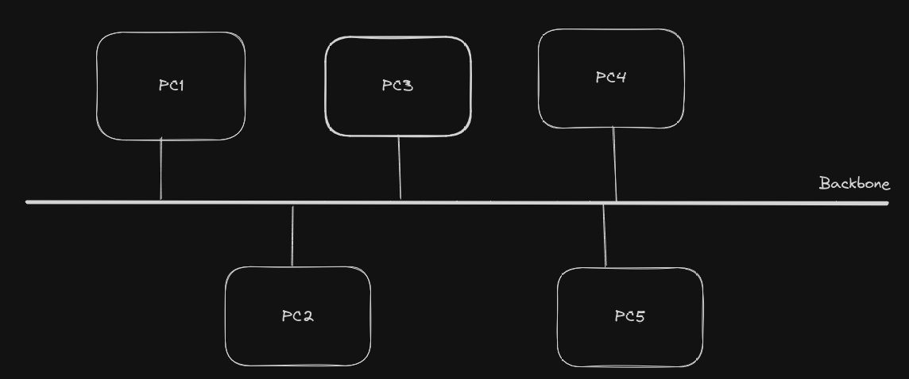

Computer Networks
Table of Contents
- 1. Introduction
- 2. Unique Identifiers of Computer Network
- 3. Network Models
- 4. Physical Layer
- 5. Data Link Layer
- 5.1. Services Provided to Network Layer
- 5.2. Framing
- 5.3. Error Control
- 5.4. Error detection and correction
- 5.5. Codewords and Code rate
- 5.6. Error-Correcting codes
- 5.7. Error-Detecting codes
- 5.8. Flow control : Stop-and-wait ARQ
- 5.9. Improving Efficiency
- 5.10. Sliding Windows
- 6. Medium Access Control Sublayer
- 6.1. Multiple Access Protocols
- 6.2. Ethernet
- 6.3. Connecting devices
- 6.4. Backbone networks and Virtual LANs
- 7. Network Layer
- 7.1. IPv4 Address
- 7.2. IPv6 Addresses
- 7.3. The Internet Protocol
- 7.4. Address Mapping
- 7.5. Delivery
- 7.6. Forwarding
- 7.7. Unicast Routing protocols
- 8. Transport Layer
1. Introduction
A computer network is collection of two or more computers that can communicate with each other.
Computer networks have two basic building blocks
- Nodes : these are devices that are connected to the network. They can either be network redistribution points or communication endpoints. Example of nodes are computers, routers, switches and other devices on the network.
- Links : these are the connections between nodes. It includes the type of connectivity (wired or wireless) and the protocols that are used for communication between the nodes.
Computer networks are made of protocols which allow us to send data through links between nodes.
1.1. Types of computer networks
Computer networks can fall under two broad categories
- Client-Server Architecture : in this architecture a communicating node can either be a server or a client. The client sends requests to the server, the server fulfills that request and sends a response. There are multiple clients connected to the same server.
- Peer-to-Peer : in this architecture there is no central server, tasks are divided amongst the nodes. Each node has the same set of capabilities and responsibilities.
2. Unique Identifiers of Computer Network
In order to establish communication between two nodes, we need to identify the nodes. This is done by using unique identifiers given to devices on a network.
2.1. Hostname
A hostname is a human readable label that is assigned to a device on the network. On the internet, a hostname is a domain name which has been assigned to a host computer. It is useful to identify devices on a local network.
2.2. IP Address
Also known as the logical address, every device to which a direct communication can be established will have a unique IP address. Interned Assigned Numbers Authority (IANA) assigns and manages ip addresses globally. Previously, ipv4 (version 4) was used and was an address of 32 bits, hence there are \(2^{32}\) unique ipv4 addresses. Because there are limited number of ipv4 addresses, we are running out of them. A new version of ip addresses ipv6 is now implemented. It has addresses of size 128 bits.
2.3. MAC Address
Stands for Media Access Control Address. It is also known as the physical address. Every Network Interface Card (NIC) is assigned a unique identifier. These are assigned by the manufacturer and cannot be changed. The length of a MAC address is 48 bits.
2.4. Ports
A single system has multiple connections and network applications running. A port is a logical channel through which data can be sent or recieved. A port number is always associated with a network address such as an IP address so that we can identify the device whose port was referenced. The unique combination of ip address and port number together is called a socket, example 192.168.0.1:8000
The ip address and port number are seperated by a colon (:)
The ports are divided into three categories.
| Port Type | Range |
|---|---|
| Well known ports | 0 - 1023 |
| Registered ports | 1024 - 49151 |
| Dynamic ports | 49152 - 65535 |
- The ports from 0 through 1023 are called well-known ports or system ports. They are used by system processes to provide widely used network services. Example, port 20 is for FTP and 80 is for HTTP.
- Ports in the range from 1024 to 49151 are user or registered ports. These ports can be freely used by the user. Unlike system ports, most OS will allow applications to use these ports without superuser privelages.
- Ports in range 49152 to 65535 are dynamic ports or private ports. They are also called ephemeral ports, because they are used for very short period of time. The TCP, UDP and SCTP typically use ephemeral port for client end of communication. The allocation of ephemeral port is temporary and only valid for short duration of communication session.
3. Network Models
A network model defines a way to organize a system's functions and features. It also defines it's structure and protocols.
In order to assign functionality to different parts of a network, these models are organized into layered structure. Each layer has a set of functions to perform. Protocols are created to handle functions in each layer. So each layer will have it's own collection of protocols which is called a protocol suite.
There are a few guiding principles for creating layers in a network model, such as
- Not creating too many layers, as it may lead to unneccessary complexity.
- Reduce the number of interactions between the layers
- Collect similar functions and seperating fundamentally different functions in different layers
- Indentify whether the function of layer is based on hardware or software.
Lower layers are linked with hardware whereas, the upper layers are linked with software.
There have been many network models, many of them are no longer used. IBM's SNA model, Apple's AppleTalk and IPX/SPX model are all no longer in use. They were phased out by the popular and most commonly used model today, the TCP/IP model.
3.1. OSI Model

The OSI model is used as a reference model. This means that it is used to provide building blocks for other network models and compare other network models to improve connectivity and consistency.
The OSI model has 7 layers. Each layer has different functionality. The principles applied for the 7 layers are
- A layer should be created where a different abstraction is needed
- Each layer should should perform a well-defined function
- The function for each layer should be chosen with eye toward defining an internationally standardized protocols
- Minimize the information flow across layer boundries
- The number of layers should be large enough that distinct functions need not be in same layer, but small enough that architecture is not unwieldy
3.1.1. Physical Layer
The lowest layer of the OSI model. Responsible for physical connections between the devices. The physical layer handles data in form of bits and is responsible for transmitting bits without loss from one node to another.
Functions of physical layer are
- Bit Synchronization : the physical layer provides a clok to synchronize sending and recieving of data between nodes
- Bit rate control : the physical layer also controls the the number of bits sent per second.
- Physical topologies : topology defines how the nodes and links are arranged in the network
- Transmission mode : the physical layer defines how data will flow from one node to another. Some transmissions modes are simplex, half-duplex and full-duplex
Hub, repeater, moden and cables are physical layer devices
3.1.2. Data Link Layer (DLL)
This layer is responsible for node-to-node delivery of the message. It makes sure that data transfer is error-free from one node to another, over the physical layer. When packet enters a network, it is the responsibility of DLL to transmit it to the host using MAC address.
The DLL has two sublayers:
- Logical Link Control (LLC)
- Media Access Control (MAC)
The packet recieved from network layer is divided into frames, depending on the frame size of NIC. The reciever's MAC address is obtained by placing an Address Resolution Protocol (ARP) request, asking for MAC address for given IP address. The destination host replies to the ARP request with it's MAC address.
The functions of DLL are
- Framing : since physical layer only accepts and transmits stream of bits without meaning or structure, the DLL breaks message into recognizable frame with boundries. This is done by attaching special bit patterns at beginning and end of a frame. Breaking message into frames is called framing.
- Physical addressing : after creating frames, the DLL will add MAC address of the sender and reciever in the header of each frame.
- Error control : DLL will detect and retransmit damaged or lost frames.
- Flow control : the data rate must be constant on both sides to not cause corruption in data. Flow control is coordinated by the DLL to avoid this.
- Access contrl : when a single communication channel is shared by multiple devices, the MAC sub-layer of DLL determines which device has control over the channel at a given time.
DLL is handled by the NIC and device drivers of host machines. Switch and bridges are example of DLL devices.
3.1.3. Network Layer
The network layer controls operations of the subnet. It is responsible for transmission of data from one host to other located on different subnets. It is also responsible for packet routing i.e, the selection of the shortest path for the packets. The sender and reciever IP addresses are place in the header by the network layer.
Routes can be based on static table that rarely changed, or are updated automatically at the start of conversation. Routes can also be highly dynamic to reflect the current network load.
Too many packets present in subnet can cause bottlenecks. Handling congestion is also the responsibility of network layer. The quality of service (delay, transit time, jitter, etc.) are also a network layer issue.
Functions of network layer are
- Routing : the network layer determines which route will be used to send packet from sender to reciever.
- Logical addressing : the network layer identifies the IP addresses of sender and reciever in the network an places them in the header.
The implementation of network layer is in devices such as routers and switches.
3.1.4. Transport Layer
The data in transport layer is referred to as segments. This layer is responsible for end to end delivery of messages. It also acknowledges successful transmission and re-transmits data if error is found.
At sender's side, this layer recieves data from upper layers, performs segmentation and also implements flow and error control. It also adds source and destination port numbers in headers and forwards the segmented data to network layer. The destination port number is configured either by default or manually. example, when requesting web server, we use destination port 80 for the request because it is default port used for HTTP requests.
At reciever's side, it performs sequencing and reassembling of segmented data. Then port number is read from the header and data is forwarded to the respective application.
Transport layer is an end-to-end layer. It carries data all the way from source to destination. That is, a program on source machine carries on a conversation with similar program on destination machine using headers and control messages. The lower layers, have protocols which communicate between machine and immediate neighbours, not the source and destination. Layers 1 to 3 are chained, i.e. communicate with neighbours while layers 4 to 7 are end-to-end.
Funtions of transport layer are
- Segmentation and Reassembly : at sender the message from session layer is broken into smaller units called segments, at receiver the segements are reassembled into message.
- Service Point Addressing : the transport layer determines what type of service is provided to the session layer and ultimately, to the user. The type of service is determined when connection is established via port address.
The service of transport layer is of two types
- Connection Oriented Service : it is a three phase service that has connection establishment, data transfer and then termination. The receiving node will send and acknowledgment and asks for re-transmission if there is error. This type of transmission is reliable and secure. example, TCP
- Connectionless service : in this type of transmission, there is no need to establish a connection before data transfer and the receiver does not send an acknowledgement. This approach allows faster communication but is less reliable. example, UDP
Transport layer is operated by the OS. This layer is called the heart of OSI model.
3.1.5. Session Layer
This layer is responsible for establishing connection, maintanance of communication sessions and authentication. It ensures the security in connection.
The services provided by session layer are
- Connection establishmen and release : The session layer open a connection between two nodes, this connection is called a session. In OSI, transport layer does not terminate the connection, the session layer is responsible for that. In TCP/IP model, this is done by the transport layer.
- Dialogue control : in a session, there can be three different types of dialogue - two way simultaneous (full-duplex), two way alternate (half-duplex) and one way (simplex). It controls which side has the turn during communication.
- Synchronization points and resynchronization : this layer allows the two sides to insert synchronization points between dialogue and allow them to resynchronize to a previous synchronization point, aborting the current transmission. This can be used for real-time audio/video.
3.1.6. Presentation Layer
Also called the translation layer. This layer translates files and data from local formats to standard, transmittable formats.
The services provided by presentation layer are
- Data conversion : example, converting file formats such as bmp to webp which are easier to transmit in a network.
- Character code translation : changing strings to bits that can be transmitted.
- Compression : compressing and decompressing data in order to reduce the amount of data has to be sent.
- Encryption and Decryption : encrypting and decryting of messages for security
- Serialization : converting complex data structures into flat structures using mechanisms like JSON and XML.
3.1.7. Application Layer
Also called the Desktop Layer. This layer acts as the window for applications to access the network. This layer produces the data which will be transferred over network and displays the information to user. This layer also contains the protocols for interfaces to different functionalities of the web.
This layer has protocols such as HTTP, FTP, SMTP, DNS and provides the functionality to use services associated with these protocols.
3.2. TCP/IP Model
TCP/IP was used in ARPANET and now the worldwide Internet. The ARPANET started as a network of hundreds of universities and government installations. When satellite and radio networks were added, they caused problems with existing protocols. This need for a model that can connect multiple networks in a seamless way was the major goal of the TCP/IP model.
Another requirment was that connections remain intact as long as the source and destination machines were working, even if some machines or transmission lines were out of operation. So a flexible and robust network was needed.
The TCP/IP model had 4 layers, but sometimes physical layer is also included in the model.
3.2.1. Link layer
The requirnment for a robust network led to the choice of packet-switching network based on a connectionless layer that runs across different networks. The link layer describes what links like serial lines and classic ethernet must do to meet needs of this connectionless internet layer. It is not a layer in normal sense, but rather an interface between different hosts and transmission links.
3.2.2. Internet layer
This layer roughly corresponds to the OSI network layer. Its job is to permit hosts to inject packets into any network and have them travel independently to the destination. That is, it will allow packets from go to one network to another while they are going to destination. This property that packets can travel through any network makes the whole network more robust, by allowing communication even if a few networks in some path are down.
The packets may even arrive in a completely different order than in which they were sent. If in-order delivery was needed, then it's the responsibility of higher layers to rearrange them.
It is similar to the old mail system. When a sequence of international letters are dropped in a mailbox from one country, most mails will be delivered to the correct address in destination country. The mails may not go in the same sequence they we entered in the mailbox. Furthermore, each country (network for our analogy) has it's own stamps, envelope size, and other rules and protocols.
The internet layer defines an official packet format and protocol called Internet Protocol (IP), with a companion protocol Internet Control Message Protocol (ICMP) that helps its function.
The job of internet layer is to deliver IP packets where they are supposed to go. Packet routing is the major obstacle for this layer. (IP has proven not effective to avoid congestion)
3.2.3. Transport
Same functionality as the transport layer in the OSI model
3.2.4. Application layer
Same functionality as the presentation layer and the application layer in the OSI model. Also handles some functions of the session layer.
4. Physical Layer
The lowest layer of the TCP/IP model. It describes the standard for the physical connections between nodes. It only views the data as a stream of bits and is concerned with transmission of bits without error.
4.1. Transmission Media
The transmission medium is the physical path between the transmitter and receiver i.e, the channel through which data is sent from one place to another.
Transmission media is broadly classified into two types
- Guided media (wired)
- Unguided media (wireless)
4.1.1. Guided Media
Also referred to as wired or Bounded transmission media.
4.2. Data and signals
4.2.1. Bandwidth and maximum data rate
Bandwidth is the measure of carrying capacity of a medium. There are two ways to define bandwidth.
- When working on the physical layer, bandwidth can be seen as the maximum frequency of the signals that can travel in the medium. It is measured in Hertz (Hz)
- In other context, bandwidth is the maximum possible data transfer rate of the medium. It is measured in bits per second (bps).
These two ways to define bandwidth are linked and are not actually different ideas.
The reason for this difference of Hz and bps measurements is that the maximum frequency of medium is something that only the physical layer is concerned with. In every other layer, we only care about how much data can be transferred. Therefore, unless we are working on physical layer, bandwidth is the maximum data transfer rate of the medium.
4.2.1.1. Maximum data transfer rate for noiseless wires
Suppose our analog signal has \(V\) different levels. Then for a noiseless wire with bandwidth of \(B\), the maximum data rate is \[ \text{maximum data rate} = 2\ B\ log_2V \text{ bits/sec} \] Example, a noiseless 3-kHz channel cannot transmit binary signal (two levels) at rate 6000 bps.
4.2.1.2. Maximum data transfer rate for noisy wires
But the noiseless wire is an ideal case, which is not possible in real wires. Amount of noise is measured using ratio of signal power to noise power called SNR (Signal-to-Noise Ratio). \(S\) denotes signal power and \(N\) denotes noise power. \[ SNR = \frac{S}{N} \] The ratio is expressed on a log scale as \[ SNR_{dB} = 10\ log_{10} (S/N) \text{ dB} \] The unit of \(SNR_{dB}\) is decibals (dB)
Using SNR, the maximum data rate in a noisy medium is \[ \text{maximum data rate} = B\ log_2(1 + S/N) \text{ bits/sec} \] Example, suppose \(SNR_{dB}\) is of 40 dB and bandwidth is 1MHz. Then, using formula for SNR, \(S/N\) is \(10^4\). Therefore, the maximum data rate is \[ \text{maximum data rate} = 1\ log_2 (10^4) \text{ Mbps}\] \[ \text{maximum data rate} = 13.288 \text{ Mbps} \]
4.3. Digital-to-digital conversion
Digital-to-digital conversion refers to converting digital data into digital signals. The way to convert digital data to digital signals is called line coding
Block coding and scrambling are done along with line coding but are not always necessary. They are used under specific conditions that depend on channel.
4.3.1. Line coding
Encoding digital data to digital signals is called line coding. Based on the number of levels used, we have three types of line coding
- Unipolar : a single voltage level i.e, a single polarity is used to represent data. Uses a single voltage and idle line.
- Polar : two polarities i.e, voltage levels are used to represent data. Two voltages and idle line is used
- Bipolar : uses three possible voltage levels. Usually shown by negative, positive and zero.
There are also Multilevel and Multitransition line codings but they are not within the scope of discussion. We only focus on these three
4.3.1.1. Unipolar NRZ
4.3.1.2. Polar NRZ
4.3.1.3. Polar RZ
4.3.1.4. Biphase
4.3.1.5. AMI and pseudoternary
4.3.1.6. Summary of line codes
TODO: This table is very very wrong, fix this
| Category | Scheme | Bandwidth | Synchronization | Has DC component |
|---|---|---|---|---|
| Unipolar | NRZ | B = N/2 | No | Yes |
| Polar | NRZ-L | B = N/2 | No | Yes |
| Polar | NRZ-I | B = N/2 | No | Yes |
| Polar | Biphase | B = N | Yes | No |
| Bipolar | AMI | B = N/2 | No | Yes |
4.3.2. Block coding
TODO : Here
4.3.3. Scrambling
TODO : Here
4.4. Network Topology
The arrangement of nodes and links in a computer network is called network topology. There are various types of topologies
4.4.1. Point-to-Point
It is the simplest connection with two nodes and a single link between them.
4.4.2. Daisy chaining
Also called linear topology, the nodes are connected in a series. Message will follows the whole chain till it reaches the destination. If a link fails in this topology, it is hard to find it, therefore it is not good for large networks.

4.4.3. Mesh topology
Every node is connected to another node through a direct link. In mesh topology, we use AHCP (Ad Hoc Configuration Protocol) and DHCP (Dynamic Host Configuration Protocol).
So every node is connected to every other node directly connected through a link. So if there are \(N\) nodes, then the each node has \((N - 1)\) links.
If there are \(N\) nodes, then in a mesh topology, the total number of links will be \[ \text{number of links in mesh topology : } \frac{N(N - 1)}{2} \] \[ \text{where } N \text{ is the number of nodes} \]
Advantages of mesh topology are
- communication is fast between any pair of nodes
- data transfer is reliable since there are dedicated links between all nodes
- since every pair of node has dedicated link, this provides security and privacy
- the network is more robust single a failure of single device won't break the network
Drawbacks of mesh topology are
- installation is hard, since each link needs to be configured
- excessive amount of cables and channels are required to connect all nodes
- the cost of maintanance is very high
Mesh topology is of two types
- Full mesh topology : it is the traditional mesh topology, where every node is connected with other node thus every node has \((N - 1)\) connections.
- Partial mesh topology : a more practical implementation where it is not necessary to connect all nodes to one another. Only channels with high amount of traffic are connected. This is not the traditional way to implement mesh topology.

4.4.4. Star topology
All nodes are connected to a central node (called the hub) through links. Hubs are not communication endpoints, their function is to forward packets across all ports. The hubs can either be passive in nature or active.
Active hubs repeat and strengthen incoming transmissions, while passive hubs simply serve as a point of connectivity. Active hubs are also referred to as repeaters.
Advantages of star topology are
- only \(N\) links are required to connect \(N\) nodes to a network
- each device will need only one port
- if one link fails, it won't affect other links
- cost effictive
Drawback of star topology are
- if the hub fails, then whole network is down
- performace is dependant on the hubs
4.4.5. Bus topology
In bus topology, all the nodes are connected to a single backbone line. This backbone is bi-directional, there are lines from node to backbone called droplines. This topology is not robust, since if backbone is damaged, the whole network is down.
In this topology, various MAC protocols are followed like TDMA, Pure Aloha, CDMA, etc.
Advantages of Bus topology
- there is only a single link and \(N\) drop lines required
- reduces the cost for installation
- CSMA is the most common method for this topology
Drawbacks
- if backbone fails, then whole network is down
- this topology can't handle heavy traffic
- adding new nodes slows the network
- security is very lower

4.4.6. Ring topology
A daisy chain in a closed circular loop is called a ring topology. The most common method for communication in this topology is token passing. A token is a frame which is circulated around the network. The token is passed from one node to another till it reaches its destination.
Advantages
- better for traffic than bus topology
- cheap to install and expand
Disadvantages
- single node failure can cause entire network to fail
- troubleshooting is difficult
- the topology is not secure
4.4.7. Tree topology
Also called a star-bus topology. It can be seen as multiple star topologies connected via a backbone like in bus topology. Tree topology is hierarchical and there are parent and child star networks. It uses protocols like DHCP and SAC. The backbone is like the truck of the tree and various star networks branch out from it.
The hubs connected directly to main backbone are central hubs. The hubs connected to other hubs are child hubs. This makes this topology very flexible.
Advantages
- allows networks to prioritize different computers
- new nodes are easy to add
- error detection and error correction is easy
Drawbacks
- if backbone fails the entire network is down. If a parent hub fails, then all the connected child network is down
- cost of maintanance is high
- reconfiguration is hard
4.4.8. Hybrid topology
A hybrid topology is when a network combines two or more topologies in a way that does not resemble standard topologies.
Advantages
- this is very flexible
- size of network can be easily expanded
Disadvantages
- it is challenging to design and maintain
- the infrastructure needs specialization to maintain
4.5. Switching
Two different switching techniques are used by networks.
- Circuit switching : the switching used in traditional telephone systems
- Packet switching : the switching used in IP technology
This section will only provide brief introduction with relation to physical layer. Switching is later discussed in network layer.
4.5.1. Circuit switching
When a telephone call is placed, the switching equipment looks for a single path from sender to receiver and maintains it for the duration of the communication. This technique of having a direct physical connection is called circuit switching.
In early days of telephone, connection was made by operator by plugging jumper cables into input and output sockets. Automatic circuit switching was invented by Almon B. Strowger. For nearly a 100 years, the automatic circuit switching equipment used worldwide was known as Strowger gear.
The parts of path between telephone may in fact be microwave or fibre or any other type of medium. There are thousand of calls multiplexed on parts of links.
The main property of circuit switching is that there is a single path for the whole duration of communication. Therefore, it needs to set up and end-to-end path before any data can be sent. The bandwidth required for communication is also reserved before data is sent.
Since there is a reserved path, once setup is complete the only dealy for data is propogation time for signals. Also once path is reserved, there is no danger of congestion. Of course the conjestion can be felt before connection is established, as it may take a while due to switching or trunk capacity.
4.5.2. Packet switching
In contrast to circuit switching, there is no need to set up dedicated path in advance. Packet switching is analogous to sending data in form of series of letters using postal system.
Each packet will travel independently of others and can choose any path to reach destination in the network. It is up to routers to use store-and-forward transmission to send each packet on its way towards the destination. Since every packet travels independently, they may arrive out of order.
Packet-switching networks place tight upper limit on the packet sizes. This ensures that no single user can monopolize any transmission line for long, so that network can handle interactive traffic. It also reduces delay since first packet of a long message can be forwarded before second is fully formed. However, there is more delay than circuit switching. In ciruit switching, bits can flow continuously without anything ever being stored and forwarded later.
Since bandwidth is not reserved, packets may have to wait to be forwarded, this introduces queuing delay and congestion. On the other hand, we don't have to wait to establish a connection. Therefore, in circuit switching (during setup) and packet switching (packets are travelling) congestion occurs at different times.
Packet switching does not waster bandwidth which is limited resource. Packet switching is also more fault tolerant, in fact that was why packet switching was chosen for internet. If some switches go down, packets can travel around them.
These differences in the types of switching also leads to the difference in which billing is usually done for both networks. With circuit switching main load factors are distance and time of communication, therefore billing is done for how long connection is established (talktime on phone calles). Whereas in packet switching main load factor is how much traffic is added to network by a user, therefore billing is done based on how much data is transferred by user.
The difference between circuit and packet switching is
| Item | Circuit switched | Packet switched |
|---|---|---|
| Call Setup | Required | Not needed |
| Dedicated Physical Path | Yes | No |
| Whole data follows same path | Yes | No |
| Data arrives in order | Yes | No |
| Is a switch crash fatal | Yes | No |
| Bandwidth available | Fixed | Dynamic |
| Time of possible congestion | At setup | On every packet |
| Potentially wasted bandwidth | Yes | No |
| Store-and-forward transmission | No | Yes |
| Billing | Per minute | Per Byte |
5. Data Link Layer
In this layer, data is handelded in form of frames. It handles data transfer between two adjacent machines.
Adjacent means two computers connected by a communication channel. The essential property of a communication channel is that it acts conceptually like a wire. That is, bits are delivered in same order in which they are sent.
The data link layer uses the services of the physical layer to send and recieve bits from communication channels.
The main functions of DLL are
- Provide a well defined interface for the network layer
- Framing sequences of bytes as self-contained segments.
- Detection and correction of transmission errors.
- Regulating the flow of data so that slow recievers are not swamped by fast senders.
5.1. Services Provided to Network Layer
The principle function of DLL is to transfer data from network layer of source machine to network layer of destination machine. The data link layers of source and destination will communicate via a data link protocol.
The service data link layer provides varies from protocol to protocol. Three common possibilities are
- Unacknowledged connectionless service : sends frames to destination without having the destination acknowledge them. Example, ethernet provides this class of service.
- No logical connection is established.
- If frame is lost due to noise, no attempt is made to detect or recover it.
- Appropriate when error rate is low and real time traffic (voice or video).
- Acknowledged connectionless service : step up in terms of reliability.
- Still no logical connection is established
- Each frame sent is individually acknowledged
- If sender gets no acknowledgement within a specified time interval, frame is sent again
- Acknowledgement in data link layer is an optimization rather than a requirnment. It can also be handled in network layer, but there the whole message is retransmitted rather than a single frame.
- On unreliable channels, data link protocols overhead is worth the cost, but it may be unneccessary on reliable channels (wired channels)
Acknowledged connection-oriented service : source and destination machine establish a connection before data transfer begins.
- Each frame is numbered
- Data link layer will guarantee that each frame is received
- Also guarantees that all frames are received only once and in right order
- Appropraite over long, unreliable links like satellite channels or telephone circuits
In connection-oriented service, transfer has three distinct phases
- Establish connection : both sides initialize variables and counters to keep track of frames
- Data transfer : frames are transmitted
- Connection released : free variables, buffers and other resources used to maintain connection
5.2. Framing
Physical layer accepts raw bit stream and attempt to deliver it to destination. But because channels are noisy, it causes error in the bit stream. The physical layer adds redundany bits to reduce error rate to tolerable level.
But the physical layer does not guarantee error-free transmission. Bits may not have equal values or the number of bits received may be different from number of bits sent. It is up to data link layer to detect and if needed, correct errors.
5.2.1. Use of framing
Data link layer breaks the bit stream into discrete frames, and computes a checksum for each frame and includes it in frame when it is transmitted. When frame arrives at the destination, the receiver can recompute checksum to test if error has ocurred.
5.2.2. How framing is done
A good framing design must make it easy for receiver to find start of new frames while using little bandwidth.
- Payload data : The data that is carried by a frame which is given to network layer is called payload data.
5.2.2.1. Byte count
Uses a field in header to specify number of bytes in the frame. Data link layer at receiver reads the byte count to know where the frame ends.
The count can be garbled during transmission. Then receiver cannot locate the correct start of next frame. Even when the checksum fails, sending frame back for retransmission won't help, since destination won't know how many bytes to skip over to start retransmission (resynchronization error).
Therefore, byte count method is not used by itself.
5.2.2.2. Flag byte
The problem of resynchronization is solved by having each frame start and end with special bytes (often the same byte) called flag byte. Flag byte is usually used as both starting and ending delimiter.
Two consecutive flag bytes indicate end of one frame and start of next. So if receiver ever losses synchronization, it can search for two consecutive flag bytes to resynchronize.
It may happen that the payload data to be sent has the same byte as the flag byte, this would interfere with framing. There are two ways to solve this, byte stuffing and bit stuffing.
5.2.2.3. Byte stuffing
Sender's data link layer will insert a special escape byte (ESC) before the FLAG byte in payload data
- The idea is the same as using \" for inserting quotes in strings
- If payload data has FLAG byte, data link layer converts it to ESC FLAG
- If payload data has ESC byte, data link layer converts it to ESC ESC
The data link layer on receiver machine will remove the esacape bytes before giving data to network layer. This technique is called byte stuffing.
This byte-stuffing scheme is a slight simplification of actual used scheme in PPP (Point-to-Point Protocol).
5.2.2.4. Bit stuffing
The problem with byte stuffing is that we use a whole byte to escape flag byte. Inserting a full byte of data every time to escape the flag byte pattern wastes bandwidth
In bit stuffing, we use a single bit in order to escape flag byte in payload data. It was developed for HDLC (High-level Data Link Control) Protocol
On senders side
- The flag byte is 01111110 or 0x7E in hexadecimal
- Whenever the payload data has 5 consecutive 1's, a 0 bit is stuffed in the outgoing stream
- Therefore only a single bit is used for stuffing rather than a whole byte
On the receivers side
- If there are 5 consecutive 1's followed by a 0, layer automatically destuffs (deletes) the 0 bit
- The flag byte 0x7E is used to detect frames
Example, if payload data has flag pattern 01111110, it will be transmitted as 011111010 on receiver's side, the 0 bit is discarded and it is given to network layer as 01111110. \[ \text{Sender side : } 01111110 \text{ transmitted as } 011111010 \] \[ \text{Receiver side : } 011111010 \text{ read as } 01111110 \]
5.2.2.5. Physical layer coding violations
Both byte stuffing and bit stuffing have the downside where length of frame depends on content of payload data. So if there are no flag bytes in payload data, then the stuffed data to be sent is small. But if we assume all bytes in payload data are flag bytes, then the data to be sent doubles when using byte stuffing. With bit stuffing, increase is roughly 12.5% for same scenario.
If we know that physical layer is using a specific coding for example 4B/5B to reduce redundancy. We can use one of the "coding violations" pattern, i.e. the unused pattern as the flag byte. Since these pattern won't occur in the payload data, this allows us to use these patterns for our flag byte.
The advantage of this scheme is that since these patterns don't occur in payload, it is easy to find start and end of frames. This method also avoids need to stuff data.
5.3. Error Control
Another goal of data link layer is to deliver data to network layer in proper order.
For unacknowledged connectionless service, sender can keep outputting frames without regard to whether they are arriving properly
5.3.1. Using Acknowledgements
For reliable service, we need to know if frame reached destination without error
- We need to provide the sender feedback about what is received
- This is done by protocol calls of the receiver, which send back special control frames with either positive or negative acknowledgement
- Positive acknowledgemen means frame was received safely
- Negative means the frame must be retransmitted
5.3.2. Lost frames
- There is a possibility that a frame vanishes completely, i.e. it is lost. This usually happens due to hardware trouble
- In this case, receiver has no way to know a frame was lost and will not react to it
- Similarly, if sender waits for acknowledgement after sending a frame and acknowledgement frame is lost, then sender waits forever
- Frame being lost is dealt by using timers in data link layer
- When sender transmits a frame, it starts a timer with an interval long enough for frame to reach destination, be processed there and the acknowledgement to propogate back to sender.
- Normally, frame is sent and acknowledgement is received within time interval, in which case timer is discarded
- If orignal frame or acknowledgement is lost, timer will go off alerting the sender
5.3.3. Retransmission of lost frames
- However, the frame can't be simply retransmitted if it is lost. Because there is risk of destination accepting multiple frames and passing them to it's network layer
- To prevent this, we need to sequence outgoing frames, so that receiver can distinguish retransmissions and originals
Managing timers and sequencing frames to ensure that each frame is passed to network layer of destination extactly once is an important duty of data link layer.
5.4. Error detection and correction
Some channels like optical fiber have tiny error rates that are a rare occurance. But other channels (especially wireless) have error rates that are orders of magnitude larger. However, transmission errors are present in every medium, so we need methods to deal with them.
There are two basic strategies for dealing with errors. Both add redundant (extra) information to the data that is sent.
- Error-correction : include enough redundant information to enable receiver to be able to deduce what transmitted data must have been and correct received data. Uses error-correcting codes
- The use of error correcting codes is refferred to as FEC (Forward Error Correction)
- Error-detection and retransmission : include only enough redundancy to allow receiver to detect that an error occured and have it request retransmission. Uses error-detecting codes.
A key consideration for both methods is that redundant bits are just as likely to have errors as data bits. So error code must be strong enough to handle these situations.
5.4.0.1. Which method to use
Both of these methods have their own uses
- On reliable channels such as fiber, it is cheaper to use error-detecting codes and just retransmit the occasional faulty frame
- On unreliable channels such as WiFi, it is better to add redundancy to each block so that receiver is able to figure out what what orignal transmitted data was
- FEC is used on noisy channels because retransmissions are just as likely to be in error as the first transmission
5.4.0.2. Types of errors in channel
There are two models of errors that can happen in a channel
- Single-bit errors :
Extreme thermal noise that overwhelm the signal briefly and occasionally give rise to isolated single-bit errors.
- Single-bit errors are easier to correct using error-correcting codes
- Burst errors :
Problem in physical processes which generate signals such as electrical interference can cause errors to code in bursts.
- Burst errors are much harder to correct than isolated errors.
- Since data is sent in blocks in networks. It is easier to use error-detecting codes and retransmit faulty blocks
Another type of error that occurs is erasure channel
- Erasure channel :
Sometimes, the location of the error is known.
- This usually happens when physical layer receives an analog signal that is not expected, so if we were using +5V for 1 bit and -5V for 0 bit, then getting some other voltage means error has occured
- This situation is called a erasure channel
- It is easy to correct these errors using Forward Error Control (FEC) i.e, by using error-correcting codes
5.5. Codewords and Code rate
Data will be sent in blocks containing data bits and the redundant bits.
In a block, data takes \(m\) bits and redundant data takes \(r\) bits
\[ \text{size of block with error code} (n) = m + r \]
\[ m : \text{number of payload data bits} \]
\[ r : \text{number of redundant data bits} \]
- A n-bit unit containing data and check bit sis referred to as an n-bit codeword. We describe it as \((n,m)\) code.
- The code rate or simply rate, is the fraction of codeword that carries payload information and not redundant data. \[ \text{code rate} = \frac{m}{n} \]
- Code rate vary depending on channel. It might be 1/2 for noisy channel, and close to 1 for a high-quality channel
5.5.1. Hamming distance
Hamming distance is a way to compare two strings of equal lengths.
- The number of positions in which two codewords differ is called Hamming distance
To calculate hamming distance
- Calculate the XOR of two strings
- Count the number of 1's in result to get hamming distance
Example, 10001001 and 10110001 are two strings of equal length (8-bits).
Their XOR is \[ 10001001 \oplus 10110001 = 00111000 \] \[ \text{Hamming distace} (d) = \text{Number of 1's in } 00111000 \] \[ d = 3 \] This tells us that the two strings differ in 3 positions
5.5.2. Use of hamming distance
Hamming distance is used to define correct error detecting and error correcting codes.
- A code is \(k\) error detecting (i.e, it can detect k single bit errors in a codeword), if and only if, the minimum Hamming distance between any two of its codewords is atleast \(k + 1\)
- A code is \(k\) error correcting (i.e, it can correct k single bit errors in a codeword), if and only if, the minimum Hamming distance between any two of its codewords is atleast \(2k + 1\)
This is given by following two equations \[ \text{Error Detection } : \text{Hamming Distance } \ge k + 1 \] \[ \text{Error Correction } : \text{Hamming Distance } \ge 2k + 1 \]
5.6. Error-Correcting codes
These codes are often used in the physical layer, particularly for noisy channels, and in higher levels for real-time media and content distribution.
There are four common error-correcting codes
- Hamming codes
- Binary Convolution codes
- Reed-Solomon codes
- Low-Density Parity Check codes
Most error-correcting codes have properties of being systematic code and linear code
- Systematic code : The \(m\) data bits are sent directly, along with \(r\) check-bits. So the \(m\) data bits are not encoded before transmission.
- Linear code : The \(r\) check bits are computed as a linear function of the \(m\) data bits. XOR or modulo 2 addition is popular choice to compute the check bits. This means the encoding can be done with operations such as matrix multiplication or simple logic circuits.
5.6.1. Hamming code
Hamming code is a error-correcting, linear code. Because of hamming distance, we know that all \(2^n\) possible bit strings are not legal for error-correcting n-codewords.
The relation between number of data bits \(m\) and redundant bits \(r\) is, \[ \text{for 1 bit error-correcting codes } : 2^r \ge (m + r + 1) \] This assures a hamming distance of atleast 3, therefore allowing hamming code to correct 1-bit errors.
Hamming code uses parity bit to get redundant bits. Hamming code can use both even and odd parity
5.6.1.1. Creating hamming codeword
- Redundant bits are stored at the \(2^i\) positions in the code word, so we store redundant bits \(r_1\), \(r_2\), \(r_4\), \(r_8\) …. \(r_{2^i}\)
- Remaining positions are for data bits \(m_i\)
- \(r_{2^i}\) is the parity bit of data bits with positions, such that position number has 1 as the \(i^{th}\) LSB in binary form \[ r_{2^i} = parity \left( \forall m_{(1\ at\ (i+1)^{th}\ LSB)} \right) \]
Example, the data bits are \(1100101\).
number of data bits is 7, after using \((2^r \ge (m + r + 1))\), number of redundant bits is 4.
Therefore, in this case, we have a 11-codeword
Now, we can calculate parity for \(r_{2^i}\)'s. In this case, we assume we are using even parity
\[ r_1 = parity \left( \forall m_{(1\ at\ 1^{st}\ LSB)} \right) \]
\[ r_1 = parity \left( m_{0011}, m_{0101}, m_{0111}, m_{1001}, m_{1011} \right) \]
\[ r_1 = parity \left( 1,0,0,0,1 \right) = 0\]
Similarly,
\[ r_2 = parity \left( \forall m_{(1\ at\ 2^{nd}\ LSB)} \right) \]
\[ r_2 = parity \left( m_{0011}, m_{0110},m_{0111}, m_{1010}, m_{1011} \right) = 0 \]
\[ r_4 = parity \left( \forall m_{(1\ at\ 3^{rd}\ LSB)} \right) \]
\[ r_4 = parity \left( m_{0101},m_{0110},m_{0111} \right) = 1 \]
\[ r_8 = parity \left( \forall m_{(1\ at\ 4^{th}\ LSB)} \right) \] \[ r_8 = parity \left( m_{1001}, m_{1010}, m_{1011} \right) = 0 \] Therefore, the final transmitted codeword is
5.6.1.2. Error detection and correction
When the receiver gets the hamming codeword, it checks the parity again to decide if an error has occured and correct it. Same type of parity (even or odd) is used to decode the codeword as was used to create it
- The parities are checked again, each checked parity will include the redundancy bits and the data bits that were used to get the redundancy bit
- The concatnation of the checked parity bits will tell the position where single-bit error has occured. If no error has occured, then all checked parities are 0s
Example, let's assume from previous example, the bit at 7th position got flipped
The first checked parity is for redundant bit \(r_1\), we will get it by cheking parity of \(r_1\) and the data bits that were used to compute it \[ c_1 = parity \left( r_1, m_{0011}, m_{0101}, m_{0111}, m_{1001}, m_{1011} \right) \] \[ c_1 = parity \left( 0, 1, 0, 1, 0, 1 \right) = 1 \] Similarly, we calculate \(c_i\) for all \(r_{2^{i-1}}\) in received codeword \[ c_2 = parity \left( r_2, m_{0011}, m_{0110},m_{0111}, m_{1010}, m_{1011} \right) \] \[ c_2 = parity \left( 0,1,1,1,1,1 \right) = 1 \]
\[ c_3 = parity \left( r_4, m_{0101},m_{0110},m_{0111} \right) \] \[ c_3 = parity \left( 1,0,1,1 \right) = 1 \]
\[ c_4 = parity \left( r_8, m_{1001}, m_{1010}, m_{1011} \right) \] \[ c_4 = parity \left( 0,0,1,1 \right) = 0 \]
- The position we get by concatnating these bits is the position of the error, in our example position of error is \(c_4c_3c_2c_1\) \[ c_4c_3c_2c_1 = 0111 \] i.e, position 7 which is exactly where the error occured
5.7. Error-Detecting codes
These codes are commonly used in data link layer, network layer and transport layer. Error-correcting codes are more useful on noisy and error prone channels (wireless). However, over higher quality channels we can use error-detecting codes to deal with the occasional errors.
There are three common error-detecting methods
- Parity
- Checksums
- Cyclic Redundancy Checks (CRCs)
5.7.1. Parity
TODO: Basic parity first (even parity odd parity)
5.7.1.1. Vertical Redundancy Check (VRC)
TODO : Here
5.7.1.2. Longitudinal Redundancy Check (LRC)
TODO : Here
5.7.2. Checksum
TODO : Here
5.7.3. Cyclic Redundancy Checks
CRC is an error-detecting code. It uses a polynomial with cofficients only 0 and 1 called the generator polynomial.
We will look at how to get redundant bit with
Example, A bit stream 1101011011 is transmitted using the standard CRC method. The generator polynomial is \(x^4+x+1\). What is the actual bit string transmitted?
5.7.3.1. Generator polynomial
The generator polynomial is what is used to get the redundant bits from the data. The first step is converting the generator polynomial to a bitstring.
- The generator polynomial will only have 0's and 1's and coefficients
- These coefficients are what are used to make the bit string
Example, the generator polynomial \(x^4 + x + 1\) is converted to bitstring as:
- \(x^4 + x + 1 = \left( 1 \times x^4 + 0 \times x^3 + 0 \times x^2 + 1 \times x + 1 \times 1 \right)\)
- Now we can get the coefficients \(1 0 0 1 1\), therefore the generator bitstring is \(10011\)
5.7.3.2. Data append bits
Before we can start to calculate the redundant bits, we need to append 0's to the LSB side of the data.
The number of 0's appended to left is equal to (length of generator bitstring - 1)
For our example, the generator bitstring in our example is \(10011\), which has length 5. So we need to append \((5 - 1) = 4\) bits to the data
So our data was previously \(1101011011\) and after appending 0's becomes \(11010110110000\)
5.7.3.3. Getting redundant bits
Now we will do special CRC division in-order to get the redundant bits. This division is paritally similar to our long division method
- We will do XOR on each step rather than subtraction
- We will choose the next digit of divisor, so that result of LSB after XOR is 0
- Only the MSB is discarded from XOR result
- After ever XOR, we will discard the first bit of the result
- Only a single bit is carried down always after discarding the bit
- Our final CRC is remainder, when there are no more bits to carry down
Example, for the example we have seen so far, the division process is

The final remainder i.e, the CRC is \(1110\).
- NOTE : for generator bitstring of size \(n\), the size of CRC is \(n - 1\)
The CRC is the redundant bits
5.7.3.4. Transmitted data
The transmitted data is our original data (not the one with appended 0's) with the CRC at the LSB side, i.e, the rightmost side
In our example, the data is \(1101011011\) and CRC is \(1110\)
- The transmitted data is \(cat(1101011011,1110)\) which is \(11010110111110\)
5.7.3.5. On receiver's side
The receiver will use the same division method with the same generator polynomial
- If remainder is 0, then there are no errors
- If remainder is not 0, then an error has occured
5.8. Flow control : Stop-and-wait ARQ
Flow control is managing the rate of data transmission between two machines to prevent fast sender from overwhelming a slow receiver.
If flow control is not implemented, then slow receiver is swamped with frames and may lose them even if transmission was error free.
- Flow control is a done in data link layer and higher layers as well.
- There are two common approaches to flow control
- Feedback-based flow control : used at both data link layer and higher layers, receiver sends feedback to sender, giving it permission to send more data, or atleast telling sender how receiver is doing
- Rate-based flow control : used only as part of transport layer, protocol has built-in mechanism that limits rate at which sender may transmit data, without relying on feedback from receiver.
- Rate-based flow control is more common in computer networks now, therefore data link layer hardware is designed to run fast enough that it does not cause loss, i.e. NICs are run at "wire speed", meaning they can handle frames as fast as they can arrive on link
- So in modern networks, overruns are not usually a data link layer problem, they are handled by higher layers
5.8.1. Flow Control : Stop-and-Wait
Currently assume that communication channel is error free. We will look at error correction later.
Stop-and-Wait is a feedback-based flow control. Most feedback-based protocols have the following basic properties
- Protocol contains well defined rules when sender may transmit next frame
- Permission is given to sender either implicitly or explicitly
In case of stop-and-wait permission is given explicitly by receiver using acknowledgement frame.
- After having passed a packet to its network layer, receiver sends a little dummy frame basck to sender, which gives sender permission to transmit the next frame.
- After sending a frame, sender is required by protocol to wait until the dummy (i.e acknowledgement) frame arrives
This protocol has a strict alternation of flow: first sender sends a frame, then receiver sends a frame, then sender again sends a frame and so on. So atleast a half-duplex physical channel is required for this protocol.
5.8.2. Error Correction : Sequence Numbers and ARQ
In a channel frame may be either damaged or lost completely. If frame is damaged in transit, receiver hardware will detect this when it computes the checksum.
The naive approach is to depend on the timer. So if the frame is damaged, receiver discards the frame and when the timer on receiver's end goes off it will retransmit the frame.
The problem with this approach is that acknowledgement sent back to the sender can also be lost or damaged, causing sender to retransmit a frame that was already given to the network layer on receiver side.
To fix this, we use sequence numbers
- Sequence number will be added to the header of each frame. The receiver can read header to know if frame is duplicate or new frame. If it is duplicate, it will be discarded and an acknowledgement is retransmitted
- Ambiguity occurs only between any two consecutive frames.
- Therefore, a single bit is enough for sequencing. So the sender's data link layer will do sequencing by adding 0 and 1 bit to headers alternatively
- When receiver gets a valid frame, it only passes the next frame if it has modulo 2 bit (0 if 1, 1 if 0) of the previous passed frame.
- Else it will discard the duplicate frame and resends its acknowledgement
Protocols in which sender waits for positive acknowledgement or timers to send next frame are called Automatic Repeat reQuest (ARQ) or Positive Acknowledgement with Retransmission (PAR).
When we pair this ARQ with Stop-and-Wait protocol, we get the Stop-and-Wait ARQ also called alternating bit protocol.
5.9. Improving Efficiency
Upto now, data frames were transmitted in one direction only i.e, there was a sender and a receiver machine. But in most practical cases, there is need to transmit data in both directions. Additionally, to increase efficiency we send multiple frames at a time before getting acknowledgement.
5.9.1. Bidirectional Transmission : Piggybacking
A simple way to achieve simple full-duplex transmission is to run two instances of half-duplex protocol (like the stop-and-wait ARQ) on both machines.
But running half-duplex protocol on both will require two links, one for each running protocol. So we need a way to use two half-duplex protocol with a single link.
We already transmit frames in both directions (one direction for data frames and other for acknowledgement), so we will intermix the data frames from A to B, with acknowledgement frames from A to B and same for frames from B to A. The data link layer will look at the header of each frame to determine whether it is a acknowledgement or data frame (kind field in header is used).
5.9.1.1. Piggybacking
Although using kind field allows us full-duplex communication, the acknowledgement frames are very small in size when compared to data frames. So in order to have more efficient data transfer, we can have acknowledgement of the received frame be attached in the header of the frame that is to be sent next
Rather than sending acknowledgement frame immediately, we will wait for the next data frame that is to be sent. This technique is called piggybacking. The acknowledgement is added to the header of data frame in ack field.
5.9.1.2. Advantages of piggybacking
- Better use of available channel bandwidth. Since the ack field only takes a few bits, whereas a seperate ACK frame will have its own header and checksum
- Having fewer frames used for communication means that data transfer is faster
- Sending fewer frames also reduces load on receiver
5.9.1.3. Problem with piggybacking (and it's solution)
The problem with piggybacking is deciding how long should data link layer avoid sending a ACK frame.
- If data link layer on one side waits too long to send ACK, the link layer on other side will retransmit the frame
- This is solved by having a receiver timeout. After a data frame is received, link layer will start a timer. If a packet is given to it by it's own network layer, then ack is attached to it otherwise a seperate ACK frame is sent.
5.9.2. Multiple frames at a time : Sliding Windows
Sliding windows are class of bidirectional transmission protocols.
- In sliding window protocols, each sent frame has a sequence number ranging from \(0\) to \((2^n - 1)\), where \(n\) is the number of bits for sequence numbers.
- Sender maintains sequence number of frames, and is allowed to send a batch of sequence numbers within a sending window
- Similarly, receiver maintans a receiving window within which it is permitted to accept frames.
- The sender's and receiver's windows don't need to be of same size
The process of a sliding window is as follows:
5.9.2.1. On sender's side
- When a packet arrives from network layer, it is given the next largest sequence number (wraps to zero).
- After getting the sequence number, frame is appended to the upper edge of window
- When acknowledgement frame for frame on lower edge arrives, the lower edge is advanced by one
This way, the frames in sender's window at any time are the unacknowledged frames.
Since the frames in sender's window are unacknowledged, they have to be kept in memory. Therefore, when window is full the network layer is paused till acknowledgement for some frames arrives
Sender's window can "grow and shrink" based on number of unacknowledged frames
5.9.2.2. On receiver's side
- The receiver's window contains frame sequences that can be accepted
- Initially, the receiver window starts with frame sequence \(0\) at the it's lower edge (at start)
On getting a frame :
- If frame contains sequence within the window, it is accepted and acknowledgement is sent
- If frame contains sequence outside the window, the frame is discarded and no ACK is sent
- When receiver gets a frame with same sequence no. which is on the lower edge, the window is moved (slid) by one position
Unlike sender's window, receiver's window is fixed in size
5.10. Sliding Windows
We will look at two protocols that are in category of sliding windows. The first one (one-bit sliding window) is not a sliding window protocol but gives us a way to connect stop-and-wait ARQ to sliding windows
5.10.1. Properties of sliding window protocols
Before looking at Go-Back-N and Selective Repeat protocols, we will look at shared properties of sliding window protocols
5.10.1.1. Bandwidth-Delay Product
The bandwidth-dealy product is the amount of data that can be sent continuously by the sender, before the first acknowledgement from receiver arrives. \[ \text{Bandwidth-Delay Product} = \text{Bandwidth} \times \text{Round-Trip Delay} \] \[ BD = B \times D \] Example, in the previous example Bandwidth is \(50kbps\) and Round-Trip Delay is \(500ms\), therefore the Bandwidth-Delay Product is \[ BD = 50kbps \times 500ms \] \[ BD = 25kb \]
5.10.1.2. Optimal/Maximum Window Size
For sliding window protocols, we want to maximize the size of window, such that everytime sender's window is almost full a ACK will arrive. \[ \text{optimal/maximum window size} = ceil \left( \frac{BD}{\text{Frame size}} \right) \] Since, \(BD = B \times D\), and \(D = 2T_p\) \[ \text{optimal/maximum window size} = ceil \left( \frac{B \times 2T_p}{\text{Frame size}} \right) \] Since, \(T_t = \text{Frame Size} / B\) \[ \text{optimal/maximum window size} = ceil \left( \frac{2T_p}{T_t} \right) \]
5.10.1.3. Pipelining
Pipelining is sending multiple packets without waiting for their seperate acknowledgements. The main goal for all sliding window protocols is to have efficient pipelining of packets through the data link.
5.10.2. One-Bit Sliding Window (Stop-and-Wait ARQ)
A one-bit sliding window means the window size is 1. This protocol uses the simple stop-and-wait ARQ since sender window is full after sending a single frame and has to wait for acknowledgement.
Example, Suppose there is a channel with bandwidth \(50kbps\) and round-trip propogation delay is \(500ms\) \[ \text{Bandwidth}(B) = 50 kbps \] \[ \text{Round-trip Propogation delay}(D) = 500 ms \] Therefore, \[ \text{Propogation delay}(T_p) = 250 ms \]
Suppose we want to send a \(1000bit\) frame with Stop-and-Wait ARQ \[ \text{Transmission delay}(T_t) = \frac{1000 bit}{50 kbps} \] \[ T_t = 20ms \] \[ \text{Total time taken to deliver data frame} = T_t + T_p \] \[ \text{Total time taken to deliver data frame} = 250ms + 20ms = 270ms \] And for the returning acknowledgement frame \[ \text{Since acknowledgement frame size is very samll, we can neglect its transmission delay} \] \[ T_t = 0 \] \[ T_p = 250ms \] \[ \text{Total time taken to deliver ACK frame} = 250ms \] Therefore, for a sending a single frame and receiving it's ACK, stop and wait takes total \(270ms + 250ms = 520ms\) time.
5.10.3. Go-Back-N ARQ
The difference between Go-Back-N and Selective Repeat is how they deal with errors.
- In Go-Back-N ARP, the sender's window is of size \(N\) and the receiver's window is of size \(1\).
- If a frame is lost, all incoming frames are discarded, i.e, receiver will refuse all frames except the next one in the sequence. This is because receiver window is of size 1
- By the time sender's link layer timeout's, the pipeline will be empty. On timeout, sender will start retransmitting frames from the lost frame in order again.
This is why protocol is named Go-Back-N, because the sender goes back and restarts the sequence of frames. This works well on channels with very low error rates, but is channel is noisy it wastes a lot of bandwidth
The properties of Go-Back-N are:
- Uses Cumulative Acknowledgement
- Does not used Negetive Acknowledgement
5.10.4. Selective Repeat ARQ
The selective repeat ARQ is better for unreliable channels
- The sender's window and receiver's window are both bigger than \(1\) and of equal size
- This protocol allows receiver to accept any frame in the receiver's window, but window is slid forward only if frame on lower edge is received
- A negetive acknowledgement (NAK), is sent for the frame which is lost, which it detects when an out of sequence frame is received.
- NAK will stimulate retransmission from sender without having to wait for timeout, which improves performance
These two approaches have trade-offs between efficient use of bandwidth and data link layer buffer space.
The properties of Selective Repeat ARQ are:
- Uses Independent Acknowledgement
- Uses Negetive Acknowledgement
5.10.5. Properties of Go-Back-N and Selective Repeat
Now we will look at the properties of Go-Back-N and Selective Repeat protocols
5.10.5.1. Cumulative ACK vs Independent ACK
Go-Back-N uses Cumulative Acknowledgements
- After sender stops sending frames, the receiver will send the ACK for the last frame it received correctly
- NOTE : Go-Back-N receiver only receives frames in correct seqence
- Sender will check this ACK to know from where it has to go-back and resend the frames
- In case no ACK from receiver arrives, sender will send all frames in it's window in sequence again
Selective Repeat uses Independent ACK
- This means that each frame that the receiver window receives, it will send an acknowledgement for it
- In case ACK of a frame is lost, sender will send it again, in which case receiver window will resend ACK
5.10.5.2. Relation between sequence numbers and window sizes
We need to make sure that window size is small enought that it does not contain overlap sequence numbers. This is done by setting as follows \[ \text{Window Size} = \frac{\text{Maximum sequence number} + 1}{2} \] Suppose sequence number uses \(n\) bits, then the window size is given by \[ \text{Window Size} = \frac{2^{n}}{2} \]
5.10.5.3. Negetive ACK (NAK)
Selective repeat uses Negative ACK to improve performance
- If receiver window receives a frame out of sequence, it will store it in it's window. But it will also send back a NACK frame back
- This Negetive ACK frame will tell sender that one frame was missing from sequence
- On receing NACK for a frame, sender will resend that frame. If receiver gets it successfully this time, then it will send an ACK frame for it
5.10.5.4. Efficiency
\[ \text{For Stop-and-wait ARQ : } Efficiency = \frac{1}{1 + 2a} \] \[ \text{For Go-Back-N ARQ : } Efficiency = \frac{N}{1 + 2a} \] \[ \text{For Selective Repeat ARQ : } Efficiency = \frac{N}{1 + 2a} \] where, \(a = \frac{T_p}{T_t}\)
TODO : show where this comes from maybe
6. Medium Access Control Sublayer
The data link layer assumes that the user has complete control over the data link. But in reality, the same link is used by multiple devices on both end. These are referred to as broadcast channels, or multiaccess channels
The medium access control sublayer has protocols which decide the device which has control over the medium currently. This sublayer is extremely important for LANs specially, where multiple devices are on same channel (example, wifi).
Note: technically, the MAC sublayer is below the data link layer. So it is between physical layer and data link layer
Functions of MAC sublayer :
- provide abstraction of physical layer to upper layers
- resolve addressing in the LAN
- multiple access resolution in multiaccess channels
- collission resolution
Collision :
If two frames are transmitted simultaneously, they overlap and resulting data is garbaled. This is called a collision. Resolving collisions is also the duty of MAC sublayer
MAC Address :
MAC address is a unique identifier alloted to Network Interface Card (NIC) of each device. It is used as address for transmission within the LAN (Example, there are multiple devices connected to same WiFi, the MAC address is used for addressing the devices)
- MAC addresses are hardcoded or hardwired into the NIC from the manufacturer, it can't be changed
- comprises of six groups of two hexadecimal digits, Example, 00:0A:89:5B:F0:11
6.1. Multiple Access Protocols
A single channel can be in use by multiple devices, and they may transmit a frame to channel at same time. If two frames are transmitted simultaneously, they overlap and resulting data is garbaled; this is called collision. To avoid collisions, we need protocols that tell devices when to transmit a frame, these protocols are called Multiple Access Protocols
The protocols used for multiple access are divided into three parts
6.1.1. ALOHA
The first ALOHA system has made at University of Hawaii. There are two versions of ALOHA : Pure ALOHA treats time to be continuous, i.e, the devices can start sending packet at any time. Slotted ALOHA divides time into discrete slots into which all frames are fitted
6.1.1.1. Pure ALOHA
The pure ALOHA protocol is the original ALOHA system. It uses acknowledgements in order to detect collissions. Suppose two sender's transmit packet at the same time and they collide
- On the receiver's side the checksums (error detecting codes) will fail. So they won't transmit any acknowledgements
- After the timeout on sender's machines, if they both retransmit again, the collision will happen again
- To avoid this, every sender will wait for a random (\(T_B\)) time before it can try retransmission. This is called back-off time.
- The number of times the retransmission fails is store in the variable \(K\)
- If \(K\) ever becomes greater than some \(K_{max}\), we will abort the whole process to try later
We usually calculate \(T_B\) as \(T_B = R \times T_p\) or \(T_B = R \times T_t\), where \(R\) is some random number between \(0\) and \(2^k - 1\). \(T_p\) is propogation delay and \(T_t\) is the transmission delay, so either one of them is used. This method is named binary exponential back-off.
\(K_{max}\) is most commonly chosen as 15
NOTE : In ALOHA systems, transmission delay \(T_t\), is also sometimes called frame transmission time \(T_f\)
Performace of Pure ALOHA :
- Transmission delay (time to transmit one frame) is \(T_t\)
- Average number of transmissions in time \(T_t\) is \(G\)
Suppose a packet starts transmission at any time \(t\). If we want this packet to complete transmission without collision, no other packet should start transmission between \((t - T_t)\) and \((t + T_t)\).
This is shown by the following diagram
Therefore, the vulnerable time for transmission is \[ \text{vulnerable time} = (t + T_t) - (t - T_t) = 2T_t \] Since average number of packets in time \(T_t\) is \(G\), the number of packets in time \(2T_t\) is \(2G\)
Using the poisson distribution, the probability of \(k\) frames in time period of \(2T_t\) is \[ P(k) = \frac{(2G)^k e^{-2G}}{k!} \] Collission won't occur when \(P(0)\), therefore the probability of zero collissions is \[ P(0) = e^{-2G} \]
The throughput is given by \(S = G \times P(0)\). So throughput for a pure ALOHA system \[ S = G \times e^{-2G} \] Where, \(G\) is the average number of frames in transmission time \(T_t\) and \(S\) is throughput
6.1.1.2. Slotted ALOHA
The slotted ALOHA was made to increase the throughput of the pure ALOHA system.
- Time is divided into discrete slots of size \(T_t\)
- A frame can only start transmission at the start of the time slot and has to finish transmission before end of time slot
- This decreases the vulnerable time window to only within the time slot of \(T_t\)
Using our previous calculations, in time slot \(T_t\), the average number of frames generated is \(G\)
So within the vulnerable window of \(T_t\), the probability of \(k\) frames is \[ P(k) = \frac{G^k e^{-G}}{k!} \] and the probability of no collissions is \[ P(0) = e^{-G} \]
Therefore, the throughput of slotted ALOHA is \[ S = G \times P(0) \] \[ S = G \times e^{-G} \] Where, \(G\) is the average number of frames in transmission time \(T_t\) and \(S\) is throughput The comparision of throughputs for pure ALOHA and slotted ALOHA system is
6.1.2. Carrier Sense Multiple Access Protocols (CSMA/CD)
Carrier Sense means that node can sense whether the channel is already being used by some other node. Therefore, it will only try to transmit a frame if channel is not already in use. This reduces the number of possible collissions.
- Though CSMA reduces the possibility of a collision, it cannot eliminate it. The possibility of collision still exists due to propogation delay
After a node senses that channel is idle, we still need some way or method to tell if a node should use it or not
1-persistent method :
The 1-persistent method is the simplest method.
- The channel is continuously being sensed by all the nodes that want to transmit
- As soon as a node finds that channel is idle, it will immediately try to transmit
- But this method has high chance of collission since multiple nodes may try to transmit as soon as channel is idle
No Persistent method :
In no persistent method,
- The channel is not being continuously sensed by all nodes that want to transmit
- Node will check if the channel is idle, if it is idle it will try to transmit the frame
- If it is not idle, the node will wait for random amount of time
Since it is unlikely that two nodes will wait the same amount of time, the chance of collision is reduced. But the no persistent method reduces efficiency, since there may be times when channel is idle but no node is using it.
p-persistent method :
This method is used in slotted channels (transmission can start only at start of a time slot).
- The channel is sensed at the start of a time slot, one of the two cases will occur
- If channel is idle, frame will be transmitted with probability \(p\). Otherwise, retry transmission at the start of next time slot
- If channel is busy, act as if collision occured and wait for back-off time
6.1.2.1. Minimum frame size for CSMA and Efficiency, Throughput
In order for CSMA to work, the minimum size of a frame is given as \[ \text{lenght of packet} \ge 2 \times T_p \times Bandwidth \] \[ \text{lenght of packet} \ge \text{Bandwidth-Delay Product} \] The efficiency is given by \[ Efficiency = \frac{1}{e^{2a} + a + 1} = \frac{1}{1 + 6.44a} \] where, \(a = \frac{T_p}{T_t}\) \[ Throughput = Efficiency \times Bandwidth \]
TODO : these probably need more explanation
6.1.3. CSMA with Collision Avoidance (CSMA/CA)
Because CSMA do not completely avoid collisions, it would be better for bandwidth if stations could quickly detect a collision and stop transmission. This is known as CSMA with Collision Detection and is the basis for classic Ethernet.
- Collision detection is an analog process
- The station's hardware must listen to the channel while it is transmitting. That is the station will transmit and listen to the signal at the same time
- If the signal it reads back different from the signal it is putting out, a collision has occured
- Since the signal that is transmitted and that read are to be compared, they must not have a huge difference in signal strength. This is what makes Collision Detection harder for wireless mediums
In CSMA/CA protocol, we have three distinct periods of time
- Transmission period : The period during which one of the station is transmitting is called the transmission period
- Idle period / Inter frame space : The period during which no transmission happens and no station want to transmit frames. Therefore, it is the period in which all the stations are quiet. Inter Frame Space is the idle time that is inserted everytime between contention period and transmission period, this helps avoid collisions in case some station is taking abnormal pause for transmitting a frame
- Contention period : The period during which channel is idle and one or more nodes / stations want to transmit frames is called the contention period. During the contention period, the stations will send a very small dummy frame to check if they can "seize" the line
6.1.3.1. Contention window / Contention slots
The contention period is divided into multiple windows or slots. At the start of each slot, the stations that want to transmit will try to seize the line
- The size of the contention window depends on the minimum time taken to detect a collision.
- Since the dummy frame used to check if it is same to seize channel, the transmission delay \(T_t\) is negligable during contention period i.e, \(T_t = 0\)
- Suppose the two farthest stations \(A\) and \(B\) want to transmit. Assume the propogation delay between them is \(T_p\)
- \(A\) transmits the dummy frame at some time \(t_0\).
- Suppose at an instant just before \(t_0 + T_p\), \(B\) transmits the dummy frame
- The collision happens just before the station \(B\), therefore it stops transmission immediately
- But the noise from collision will take \(T_p\) time to return to station \(A\)
- Therefore station needs to wait atleast for time \(2T_p\) before it can seize the channel
Therefore, the size of contention slot is \[ \text{size of contention slot} \ge 2 \times T_p \] TODO : image for CSMA/CA
6.1.4. Reservation
In this method, a node / station needs to make a reservation before sending data. This protocol has two period : a reservation interval and data transmission interval.
- Suppose there are \(8\) stations on the channel, then there will be \(8\) slots in the reservation interval. In general if there are \(N\) stations, the reservation interval has \(N\) slots
- Each station is allowed to book a reservation for itself within it's time slot during reservation interval. If it misses the chance to book a reservation, it must wait till the next reservation interval for it's next slot
- All stations that sucessfully got a reservation get to transmit a frame during the data transmission period. They will transmit the frame in order in which slots are booked
Performace
During the reservation interval, the very first station (station \(0\)) has to wait for \(N -1\) slots before transmission period begins. For last station, it has to wait \(0\) slots and so on.
- Therefore the stations \(0,1,2...N-1\) have to wait \(N-1,N-2,...,0\) slots respectively before transmission period
- Therefore, on average evey station waits for \(N\) slots. If a slot is of time teriod \(s\), the average time each slot waits during reservation is \(s \times N\)
Suppose the size of a frame is \(d\)
- For low loads the efficiency of channel is \(\frac{d}{d+sN}\), we usually consider \(s = 1\) then efficiency is \(\frac{d}{d+N}\)
- For high loads the efficiency is \(\frac{d}{d+1}\)
6.1.5. Polling
In polling, the channel has a primary station. All the frames have to pass through the primary station. Suppose station \(A\) wants to transmit a frame to the station \(B\)
- The frame goes from station \(A\) to primary station during a poll
- The frame is then sent from primary station to the station \(B\) by select
6.1.5.1. Poll
The primary station sequentially sends a POLL frame to all the other stations.
- If the station receiving POLL doesn't need to transmit a frame, it will send a "poll reject" frame (NACK) to primary station
- If the station receiving POLL wants to transmit a frame, it will send a data frame. The primary station sends back ACK on receiving the data frame
6.1.5.2. Select
After primary station receives a frame, it will transfer it to destination station via a select (SEL)
- The primary station sends select frame (SEL) to the destination station
- The destination station sends back an ACK, accepting the data frame
- The primary station then sends the data frame
- When received successfully, the destination will return the ACK to primary station
6.1.5.3. Efficiency
Suppose polling on average is taking time \(T_{poll}\) and on average transmission of data is taking time \(T_t\). Then, \[ Efficiency = \frac{T_t}{T_t + T_{poll}} \]
6.1.6. Token Passing
Token passing is common in ring topologies though it is not exclusive to them. In other topologies we can form a logical ring to emulate rings.
- This protocol uses a small frame called a token to give control to transmit to the stations
- The token is passed in a ring in a pre-defined direction
- If the station that currently holds the token has some frames queued to transmit, it will transmit them
- Else the token is passed to it's successor in the ring
Logical Ring
In case the topology is not a ring topology, we can simply have a logical ring.
- In the logical ring, each node will have a successor and a predecessor
- After a node has completed transmission, it can pass the token to the successor node
For example, a bus topology in which every node knows it's predecessor and successor's address can form a logical ring to pass token. This protocol is called token bus. This bus ring topology was previously standardized in IEEE 802.4 (now depricated)

Performance
\[ Delay (\alpha) = \frac{T_p}{N \times T_t} \] \[ Throughput (S) = \begin{cases} \frac{1}{1 + \alpha} & \text{if $T_p < T_t$} \\ \frac{T_t}{T_p + \alpha T_t} & \text{if $T_p > T_t$} \end{cases} \]
6.2. Ethernet
There are two types of ethernet : classic ethernet also called standard ethernet, which uses the multiple access protocols; and switched ethernet, which uses devices called switches

6.2.1. Standard Ethernet : MAC sublayer
The MAC sublayer of classic ethernet governs the access method. The MAC layer is also responsible for framing of data in the classic Ethernet
6.2.1.1. Frame Format
A frame in classic ethernet frame contains seven fields :
- Preamble (7 bytes) : The first field of frame is 7 bytes (56 bits) of alternating 0's and 1's (each byte is \(10101010\)). The preamble is added at physical layer and is not formally part of the frame. It alters receiving system that frame is coming and to synchronize input timing
- Start Frame Delimiter (SFD) (1 byte) : Signals the start of frame. It is the last chance for station to synchronize. It's value is \(10101011\), i.e, last two bits are \(1\) and rest is same as preamble byte
- Destination Address (DA) (6 bytes) : The physical address (MAC address) of the destination station
- Source Address (SA) (6 bytes) : The MAC address of the source station
- Length or type (2 bytes) : in original ethernet, this field was used to define upper-layer protocols using MAC frame. In IEEE ethernet, this field is used to store length of data
- Data : this field carries data from upper-layers. Minimum size is 46 bytes and maximum is 1500 bytes. If data from upper layers is less than 46 bytes, it is padded. The lower limit exists for correct operation of CSMA/CD. The upper limit is for two reasons
- historically, memory was expensive so upper limit ensured low memory usage of stations
- the maximum length restricts single station from monopolizing the shared medium
- CRC (4 bytes) : the error detection information. It is CRC-32 of data field

6.2.1.2. Addressing
Every station has it's own network interface card (NIC) with a unique MAC address. It is a 6-byte (48-bits) physical address. It is written with each byte in hexadecimal notation seperated by a colon. The six fields are called six octats
Example, 06:01:02:01:2C:4B
A source address is always unicast, since a frame has to originate from a single machine. But the destation of a frame can be multiple stations. In this case, the destination frame is a multicast address.
- A unicast destination address means the frame is sent to a single destination station.
- The relationship between sender and receiver is one-to-one.
- If LSB of first byte in MAC address is 0, it is unicast address. (i.e, first octat number is even)
- A multicast destination address means the frame is sent to multiple destination station.
- The relationship between sender and receiver is one-to-many.
- If LSB of first byte in MAC address is 1, it is a multicast address (i.e, first octat number is odd)
The broadcast address is FF:FF:FF:FF
- it is a special case of multicast address
- the recipients are all of the stations on the LAN
6.2.1.3. Access method : CSMA/CD
Standard ethernet uses I-persistent CSMA/CD. The time given to a slot is given by slot time
slot time = round-trip time + time required to send jam sequence
The slot time can be calculated as
\[\text{slot time} = \frac{\text{packet size}}{\text{speed of NIC}} \]
For standard ethernet, the packet size is 512 bits and speed is 10-Mbps. So slot time is \[ \text{slot time} = \frac{512 bits}{10^7 bps} secs\] \[ \text{slot time} = 51.2 \mu s \] The maximum length between two stations is calculated as \[ \text{max length} = \text{propogation speed} \times \frac{\text{slot time}}{2}\] The propogation speed is \(2 \times 10^{8} m/s\) in most mediums, therefore the max length is \[ \text{max length} = 2 \times 10^{8} \times \frac{51.2 \times 10^{-6}}{2} m = 5120 m\] But due to delay times in repeaters and interfaces, the laximum length is reduced to only \[ \text{max length} = 2500 m \]
6.2.2. Standard Ethernet : Physical Layer
For standard ethernet, physical layer implementation is different; the four most common are discussed here
- 10Base5 : Bus topology, Thick coaxial cable
- 10Base2 : Bus topology, Thin coaxial cable
- 10Base-T : Star topology, Unshielded Twisted Pair (UTP) wire
- 10Base-F : Star topology, Fiber
All standard ethernet use basebad at 10-Mbps. The line coding used is Manchester scheme.
6.2.2.1. 10Base5 : Thick Ethernet
Called thick ethernet or thicknet. It uses a bus topology
- Name comes from size of cable, which is size of garden hose and too stiff to bend
- Uses an external transeiver (transmitter/receiver) via a tap cable to the thick cable
- 10 stands for speed 10Mbps. The 5 stands for maximum length of the coaxial cable which is 500m
- Collisions occur only within the thick coaxial cable
6.2.2.2. 10Base2 : Thin Ethernet
Also called cheapernet, since it is more affordable. It also uses a bus topology
- The cable is flexible and much thinner
- Transceiver is part of the NIC
- 10 stands for speed 10Mbps. The 2 stands for maximum length of coaxial cable which is 185m (very close to 200m)
- Collisions occur only within the backbone of bus topology
6.2.2.3. 10Base-T : Twisted-Pair Ethernet
It uses a physical star topology
- All stations are connected to a HUB
- Two twisted-pair cables are needed per station (one for sending and one for receiving)
- The maximum length of a twisted-pair wire is 100m
- Collisions happen in the HUB
6.2.2.4. 10Base-F : Fiber Ethernet
It also uses a star topology
- All stations are connected to HUB
- Two optical fiber cables are needed per station (one for sending and one for receiving)
- The maximum length can go upto 2000m
In summary, the different physical layer implementations are
6.2.3. Switched Ethernet / Bridged Ethernet
- The bridged ethernet uses the same MAC sublayer protocols, so frame format and access method is the same.
6.2.3.1. Bridges
A bridge is a layer 2 switch (i.e, it works on 2 layers; physical and data link layer). A hub is a simple physical connection of the wires, whereas within a switch, packet switching is done.
- The packet received by hub is forwarded to every station connected to the hub
- The packet received by switch is forwarded only to the station to which frame is addressed
- The switch reads the MAC address of the frame to determine which port to send the frame to
- Since the bridge only forwards packets to the needed port, it reduces the collision domain to only between the bridge and the station
- Every port in a layer 2 switch is equivalent to a seperate LAN. So layer 2 switch (bridge) is used to connect different LANs
6.2.3.2. Using N-port bridge
A layer 2 switch with N ports is called an N-port bridge.
- Using only bridges in our LAN allows us to achieve faster speeds since bandwidth is not divided
Example, if there are 6 stations and bandwidth is 12mbps, then if we use HUB to connect the six stations each one will get bandwidth \(12/6 = 2mbps\). But if we use a switch to connect the stations, each will get the complete bandwidth of \(12mbps\) since each station has a seperate collission domain

6.2.3.3. Full-duplex switched ethernet
This is the fastest ethernet solution. It uses N-port bridges to connect the stations. Also the connections between the stations and the layer 2 switch is full-duplex
Since every path a packet can travel has a seperate domain, there is no need for CSMA/CD i.e, there is no need for Access Control Protocols

6.2.4. Fast Ethernet
IEEE created Fast Ethernet under 802.3u.
- It is backward compatible with standard ethernet
- It uses the same MAC sublayer protocols, this was one of the main goals when making fast ethernet
- So minimum and maximum frame size, frame formats and MAC addresses are all same
- The only difference is in the physical layer
- It's speed is 100Mbps
- The physical topology differes from standard ethernet
- Bus topology is not supported, only star topology is supported
- If there are only two stations, they can be connected point-to-point
Autonegotiation
Since fast ethernet needed to be backwards compatible, it introduced feature called autonegotiation
- This feature allows two devices to negotiate the mode of data transfer (half-duplex or full-duplex); and the data rate (10Mbps or 100Mbps)
- This allows incompatible devices, (one using standard ethernet and another using fast ethernet) to form connection
6.2.4.1. Implementations of Fast Ethernet


6.2.5. Gigabit Ethernet
IEEE commitee calls it 802.3ab. The physical layer is same as the Fast ethernet
6.2.5.1. MAC sublayer
Similar to fast ethernet, at first IEEE tried to keep MAC sublayer untouched. But to reach speed of 1Gbps, this was not possible. So for Gigabit ethernet, changes were done to MAC sublayer. Most Gigabit Ethernet work in Full-duplex but some implementations have been defined for half-duplex. Autonegotiation is supported in gigabit-ethernet
Full-Duplex Mode
In this mode, CSMA/CD is not used because of lack of possible collisions. The length of wire is determined by signal attenuation in cable. Therefore, no change from standard ethernet MAC sublayer is done for full-duplex mode.
Half-Duplex Mode
Gigabit ethernet can be used in half-duplex but is extremely rare to do so. The MAC sublayer needs to be changed in order to accomadate half-duplex mode. In half-duplex mode HUBs are used, therefore CSMA/CD needs to be used. There are three additions for half-duplex in gigabit ethernet
- Traditional => The minimum frame length is same as standard ethernet (512bits). But since speed is 100 times faster, the length is also 100 times less. So length of wire is 25m
- Carrier Extension => The minimum length of frame is increased to (4096bits). Since frame size is increase 8 times, the length of wire also increases by 8 times. This increases the length of wire to 200m. But if frame is smaller, the station needs to pad it.
- Frame bursting => This is used when we are using carrier extension. Carrier extension is very expensive (bandwidth-wise) for smaller frames. So rather than padding a single small frame, multiple data frames are concatnated before being sent to the line.
6.2.5.2. Implementations of Gigabit Ethernet


6.2.6. Ten-Gigabit Ethernet
- Uses same frame format and frame sizes
- Only full-duplex mode is supported. Therefore, CSMA/CD is no longer part of design
- Uses scrambling and 64B/66B encoding

6.3. Connecting devices
Connecting devices can be divided into five different categories based on which layer they operate

- Passive hubs work below the physical layer
- Repeater and Active hubs work on the physical layer
- Bridges and two-layer switches work on data link layer and physical layer
- Routers and three-layer switches work on network layer, data link layer and physical layer
- Gateways work on all layers
6.3.1. Passive Hubs
A passive hub is just a connector. It connects the wires coming from different branches. It doesn't make any changes to the signal it gets

6.3.2. Repeaters and Active Hubs
These devices work on the physical layers.
- Signals in a medium can only travel a finite distance, based on signal strength
- Repeaters and Active Hubs take the signal and regenerate them. This can be used to increase the possible length of wire in LANs i.e, if maxium range for wire is 25m and station is 50m away, we can place a repeater in middle and use two wires to connect the station
6.3.3. Bridges
This device works on both physical and data link layer.
- Bridge read the physical (MAC) address contained in the frame and send frame to only the destination station
- Therefore each port connection to a port is a seperate collission domain
- This ability of a bridge to send frame to only a single port avoiding collission is called filtering
6.3.4. Transparent Bridges
A transparent bridge is a bridge which does not require any additional configuration i.e, we don't need to fill the forwarding table which stores which port have which MAC addresses manually.
- The stations are completely unaware of the transparent bridge, i.e, it can be removed or added to network without extra configuration
A transparent bridge must meet three criteria
- Frames must be forwarded from station to another correctly
- Forwarding table is automatically made by learning frame movements in network
- Loops in network must be prevented
6.3.4.1. Learning
Earlier bridges had static forwarding table, and were entered manually. The transparent bridges on other hand have learning capacbility by monitoring flow of frames
- Suppose a frame is received by switch which is going from station A to station B
- If bridge doesn't have entry for station A, it can read it the frame header to get it's MAC address. This is then stored for later use in the table
- If bridge doesn't have entry for station B, it sends the frame to every station (this is called flooding the network)
6.3.4.2. Avoiding Loops
Transparent bridges work fine if there are no loops. But sytem admins like to have redundant bridges to make network more reliable. But these redundant bridges create loops
- Loops interfere with learning process of transparent bridges
- To solve looping problem, bridges use spanning tree algorithms to create loopless topology. Since bridges can't change physical topology themselves, they create a logical topology in form of a spanning tree
- Minimum spanning tree algorithms are used to make performance better in network, by selecting the fastest bridges
- Bridges use special packets called bridge protocol data units (BPDUs), to create and update spanning tree
But spanning trees aren't the only solution. Some transparent bridges use source routing instead of spanning tree
- The routing is done by source station, (and to small extent, by destination station).
- The stations define bridges that frame must visit
- The source station thus first needs to get locations of bridges using special frames
Source routing is used with Token Ring LANs
6.3.5. Switches
Switches are multiport transparent bridges. Since they have multiple ports, each port is bufferred so that a single line is not flooded with frames
- Switches don't divide bandwidth of network among ports (unlike normal HUBs)
- Frames are buffered in queue, if multiple frames are to be on same line
- Some switches also implement security features
Switches are of two types
- Store-and-Forward Switching : this method of switching data packets receives a packet, checks for errors and then forwards packet only when the whole packet has arrived at the switch
- Cut-through switching : this method does not process packet at all, as soon as it can read the destination address field, it will send the packet on the correct port without waiting for whole packet to arrive
6.3.6. Routers (Three-layer switches)
These are three-layer device which route packets based on their logical address. Routers are usually used to connect LANs to the WANs like the internet
- The routing tables are updated dynamically
- Network layer contains the protocols to update these routing tables

6.3.7. Gateway
These devices work on all five layer of Internet or all seven layers of OSI model (i.e, they work on all layers of network models)
- They can read and interpret the application messages
- They can be used to connect different network models (like OSI with TCP/IP model network)
- Since they can interpret application messages, they are used for security and filtering unwanted messages
6.4. Backbone networks and Virtual LANs
6.4.1. Backbone networks
Networks where several networks are connected using a sigle backbone network
6.4.1.1. Bus backbone
Used to connect different buildings of organization

6.4.1.2. Star backbone
Also called collapsed or switched backbone. The backbone of the network is just a single switch

6.4.1.3. Connecting remote LANs
In this type of backbone network, the point-to-point bridges are used to connect the different LANs. Each LAN will have it's own bridge which is connected point-to-point to backbone

6.4.2. Virtual LANs

VLANs are software that run of the switch
- VLANs divide network into logical LANs, instead of physical seperate networks.
- Each VLAN can thus act as a workgroup for an organization
- This means that stations can be moved to different workgroups without having to rewire the physical networks
- This is useful when messages need to be broadcasted to a paritcular workgroup
- Moving people form one workgroup to another is also easier
6.4.2.1. Membership in VLANs
A VLAN software may use one or more following characteristics to divide VLANs
- Port Numbers : The ports of the switch can be used to define which stations connected to which port of switch are in which VLAN
- MAC Addresses
- IP Addresses
- Multicast IP Addresses (more about these later in network layer)
6.4.2.2. Configuration
The configuration can be of three types
- Manual configuration : administrator needs to enter characteristics for the VLAN software
- Automatic configuration : admin can define certain criteria (like station names, project IDs or user IDs) to automatically connect or disconnect stations from VLAN
- Semiautomatic configuration : initialization done manually and migrations done automatically
6.4.2.3. Communication between switches
When using backbone network, the VLAN software running on backbone switch needs to known membership of stations in other switches. Following methods are used to get this info
- Table Maintenance : In this method, when a station sends broadcast frame to its group members, the switches will record station membership in bottom-up fashion. These recorded tables are passed around
- Frame tagging : an external header is attached to frame that defines the destination VLAN, this is the frame tag. It is used by receiving switches to determine VLANs to be receiving broadcast messages
IEEE standard uses the frame tagging for VLANs in backbone networks
7. Network Layer
It is a host-to-host layer. This layer has the IP protocol which is used to route packets on the internet. There are two versions of internet protocol IPv4 and IPv6
7.1. IPv4 Address
IPv4 address is a 32-bit address that will uniquely and universally define connection of a device (computer or now more commanly a router) to the internet.
- IPv4 addresses are unique, each address defines a single connection to the internet
- If a device wants \(n\) connections to the internet, it needs to have \(n\) addresses (router is one such device)
- Universal means all devices on internet use the same IP addressing system
7.1.1. Address Space
For any protocol, the total number of possible addresses is called it's address space.
For IPv4, since it is 32-bit, the address space is \(2^{32}\) addresses.
- Theoretically, IPv4 must support \(2^{32}\) connections
- But actual number of addresses is less since there are restrictions on the adresses
7.1.2. Notation
There are two prevelant notations for IPv4 addresses
- Binary notation : all 32-bits of the address are shown in this notation Eg, \(01110101 10010101 00011101 00000010\)
- Dotted-decimal notation : the four bytes are written in decimal form, seperated by a dot (.) The address from previous example in this notation is \(117.149.29.2\)

7.1.3. Classful addressing
IPv4 addresses used to have concept of class. This type of addressing is now obsolete
The address space is divided into five classes: A, B, C, D and E
- The classes are divided based on the first byte

In binary notion, we can tell class of address by looking at first few bits

Each class has fixed number of blocks and fixed fixed size
- The class A addresses were designed for large organization with large number of hosts (or routers). Therefore it has a large host ID block (last 24 bits of IP address)
- The class B addresses were desiged for mid sized organization. Therefore it has a mid sized host ID block (last 16 bits of IP address)
- The class C addresse were designed for small sized organizations. Therefore, it has small host ID block (last 8 bits of IP address)
- The class D IP addresse are for multi-casting
- The class E IP addresses are reserved addresses. They were reserved for experimentation and research purposes
7.1.3.1. Network ID and Host ID
The network IDs were assigned to the organizations to use. The host IDs are added by the organization to uniquely identify the stations on their network
- Network IDs will identify the network to which the IP address belongs.
- Host ID will identify the host (devices) within the network

7.1.3.2. Mask
A mask is a 32-bit number with \(n\) leftmost bits being 1's and remaining \((32 - n)\) bits being 0's. The mask is used to seperate the host id and net id from a given IP address.

We use logical AND to get the network id and host id, from the IP address. The last column of table is called slash notation or Classless Interdomain Routing (CIDR) notation. This notation is used in classless addressing.
7.1.3.3. Supernetting
The number of hosts in class C blocks is \(2^8\) i.e, 256 hosts on the same network. This is too small for most organizations. The solution to this is supernetting
- Several networks are combined to create a super network or supernet
- An organization applies for set of class C blocks instead of one.
- Example, if organization needs 1000 addresses, it will use 4 contiguous blocks of class C addresses
7.1.4. Classless addressing
In classless addressing, organizations are still granted block (range) of IP addresses. But unlike classful addressing, their size is not fixed.
There are three restrictions on classless adress blocks
- The address blocks must be contiguous
- Number of addresses in block must be power of 2
- The first address must be divisible by the number of addresses in block (we are referring to first address in binary notation, i.e as a single number)

We can see that this block follows all three restrictions. The first IP address is converted as \[ (11001101 00010000 00100101 00100000)_2 = (3,440,387,360)_{10} \] Which is divisible by 16
We don't need to convert the first address of block to decimal to check if it is divisible my some \(2^m\). If a binary number is divisible by a number \(2^m\) then it's last \(log_2 (m)\) bits have to be 0's
7.1.4.1. Mask (CIDR notaion)
Mask is used to define block of addresses. In classless addressing, it is more important since the block sizes aren't fixed. In a mask, the first \(n\) bits are 1's and remaining \((32 - n)\) bits are 0's.
- In CIDR notation, we define a mask by a single value \(n\). Where \(n\) is the number of leftmost bits that are 1's
- This is written alongside the IP address seperated by a slash.
Example, \(205.16.37.32/28\) is the block is CIDR notation for the block of our previous example which has starting address \(205.16.37.32\) and 16 addresses
Therefore the \(n\) is calculated as \[ n = 32 - log_2 (\text{number of addresses}) \] Since that is the number required bits for all host IDs
7.1.4.2. First and last address of block
If we are given any address from a block in CIDR notation, we can get the first and last address of that block. Suppose the IP address is \(a.b.c.d/n\)
- The first address in the block can be found by setting the rightmost \(32 - n\) bits to 0s
- The last address in the block can be found by setting the rightmost \(32 - n\) bits to 1s
The first and last address in block are special addresses. They are not given to any of the devices on the network.
- Network address : The first address in block is called the network address. The router will use this address for unicast and multicast routing protcols. This will not be assigned to any device in the network
- Broadcast address : The last address in block is called the broadcast address. Packets that are destined to this address are sent to all devices on the network. This is also not assigned to any device in the network.
Number of addresses in block
The number of addresses in block for the address in CIDR notation is \[ \text{number of addresses} = 2^{32 - n} \]
7.1.4.3. Hierarchy in IP addresses
IP address have levels of hierarchy, based on whether we have subnetting or not
Two-level Hierarchy: No Subnetting
When not subnetted, IP address have two levels of hierarchy. A Network ID (or network prefix) to identify the network. And the Host ID (or host address) to identify a host on the network.
- The prefix remains same for all devices on the network
- Only the host ID at the end changes for different devices on the network
- If mask is \(n\) in CIDR notation :
- The leftmost \(n\) bits are network ID
- The rightmost \(32 - n\) bits are host ID
Three-level Hierarchy: Subnetting
If an organization has a large block of address, it can break it into smaller clusters of addresses (subnets).
- Outside of the network, it is still treated as one big network
- But internally, it is organized into several subnets. These subnets can be given to different departments of the organization
- Internally, each subnet has it's own new mask. This subnet mask is only relevant inside the organization itself
Example, suppose an organization has a block 17.12.40.0/26, which has 64 addresses. It wants to break it into three subnets of sizes 32, 16 and 16 addresses.
- subnet mask for 32 addresses is \(n_1 = 32 - log_2 (32) = 27\)
- subnet mask for 16 addresses is \(n_2 = 32 - log_2 (16) = 28\)
- subnet mask for 16 addresses is \(n_3 = 32 - log_2 (16) = 28\)
In general for the subnet with \(x\) addresses, the subnet is given by \[ \text{subnet mask for $x$ addresses $(n_i)$} = 32 - log_2 (x) \] The network prefix is the same for all the subnets, instead we divide the host ID further into host ID and the subnet ID (or subnet prefix)
- This ability to make subnets makes classless addressing more flexible
- This is very useful since in real application, the ISPs divide their block of network into smaller subnets for local ISPs. Then local ISPs further divide it into even smaller blocks and give them to different organizations
- The Internet Corporation for Assigned Names and Addresses (ICANN) is responsible for address allocation.
- ICANN usually does not allocate to individual organizations
- Instead ICANN assigns large blocks of IP address to ISPs who will distribute it to users
- This is called address aggregation by the ISPs
7.1.5. Network Address Translation (NAT)
With the increase in number of home users and small businesses. And the number of devices used by individuals, it was hard to assign an IP address to all of them. Previously, we used dial-up which gave the user an IP address for temporary amount of time. But now, we use Network Address Translation (NAT)
- Internally, users have a large set of addresses that they can use for all their devices. The traffic inside the local network uses this set of addresses
- Externally, there is a small set of addresses (usually a single address). This is the set of addresses that will connect to outside traffic (i.e, the internet)
The Internet authorities have reserved three sets of addresses as private addresses for this purpose.

Any organization can use addresses from this set without permission. These are the private addresses that are used within the local area networks (LANs) by homes and organizations.
- These private addresses are not unique globally, so they can't be used to forward packets on the internet
- There is usually a single connection to the global internet through the router
- The router runs the NAT software
- The private network is transparent to the rest of the Internet; the rest of the internet only sees the NAT router with the single outside connection address
- This connection address to NAT router is given by the ISP

7.1.5.1. Address translation
All packets to and from the internet go through NAT router. This modifies the outgoing packets
- For outgoing packets, it will replace the source address of packet to gloabl NAT address
- For incoming packets, it will replace the destination address of packet to the appropriate private address

7.1.5.2. Translation table
For outgoing packets, the process is simple. But for incoming packets, we need a way to know the destination address of the incoming packet. There are three types of NAT that are used
Static NAT
In this NAT, the router only has a single external IP address.
- The translation table marks a pair of information for outgoing packet
- It notes the Private IP address that is sending the packet
- It notes the External IP address that is receiving the packet
- When there is an incoming packet,
- It matches the source address in the packet with the External IP in table
- If found, it will replace the destination address in packet with the Private IP from table

This strategy has following drawback
- Communication can only be initiated by device from inside the private network (this is why we can't have server from inside private network, when using NAT)
- Two devices in the private network cannot communicate to same public IP address at the same time
Dynamic NAT
In this NAT, the router has multiple external IP addresses. The translation process is the same, but it allows multiple hosts from private network to communicate to same external IP address at the same time.
So, if the NAT router has 4 global addresses assigned to it. Then 4 hosts in private network can communicate to the same external IP address at the same time.
Port Address Translation
In this strategy, instead of only storing a pair of data (Private IP and External IP), we will store 5 columns of data in translation table
- 5 columns of data is stored in translation table for every outgoing packet
- The private IP address and it's private port number
- The external IP address and it's external port number
- The transport protocol that is used for communication
- For an incoming packet
- It will try to match all the four extra column data i.e, Private Port, External Address, External Port and Transport Protocol
- If the data matches, it will replace the destination address in packet with the corrosponding Private Address

There can be a case where two hosts use the same private port, but it is extremely rare that this happens. Therefore, this is a very efficient way to have many-to-may communication in a NAT
7.1.5.3. Usuage of NAT by ISPs
NAT technology allows ISPs to have way more customers than the number of global IP addresses it is granted. The ISP can simply assign private IP addresses to it's customers and then it will use NAT on it's site to connect all of the users to the internet.
Example, if an ISP has 1000 addresses and 100,000 customers, it can translate packets from all 100,000 customers to one of the 1000 global addresses. As show in the example below

7.2. IPv6 Addresses
IPv6 address is 128 bits long. That is it is 16 bytes long. So the address space is \(2^{128}\) addresses
7.2.1. Notation
2 bytes of data can be shown by 4 hexadecimal digits. Therefore, we use 4 hexadecimal digits for every 2 bytes which is seperated by colons. Example, \[ FDEC:0074:0000:0000:0000:B0FF:0000:FFFF \]
7.2.1.1. Abbriviating notation
As we can see in the example, the four hexadecimal digits may have leading 0's (we can see it above in 0074). Rather than writing leading 0's, we can abbriviate them. We also write (0000) as just 0 \[ FDEC:74:0:0:0:B0FF:0:FFFF \] This is much more convinient to write. But we can see that between 74 and B0FF, there are only 0's. This is sometimes further abbriviated to only \[ FDEC:74::B0FF:0:FFFF \]

7.2.2. Address Space
The few leftmost bits in the IPv6 address are type prefix. The type prefix is variable in length


7.2.2.1. Unicast address
A unicast address define a single computer. Packet sent to a unicast address must be delivered to that specific computer. There are two types of unicast addresses
- Geographic-based unicast addresses
- Provider-based unicast addresses
The provider-based unicast address is discussed here.

Fields for provider-based address is as follows
- Type identifier : This is the first 3-bit field, this defines the address as provider-based address
- Registry identifier : This is a 5-bit field, used to identify the agency that has registered the address. There are currently three registry centers. INTERNIC is for north america; RIPNIC is for center European; APNIC is for Asian and Pacific countries.
- Provider identifier : varibale-length field identifies the provider for Internet access (such as ISP). 16-bit is recommended length
- Subscriber identifier : variable-length field that identifies the subscriber to the ISP. A 24-bit length is recommended
- Subnet identifier : each subscriber can have multiple subnets, and each subnet has different identifier. A 32-bit lenght is recommended
- Node identifier : defines the node connected to the subnet. A length of 48-bits is recommended for this field to make it compatible with 48-bit MAC addresses.
7.2.2.2. Multicast addresses
Addresses define a group of hosts instead of just one.

- The flag field is used to define group addresses as either permanent or transient. Some group addresses are permanent define by Internet authorities and can be accessed at all times. A transient group address is only used temporarily.
- The scope field is used to define the scope of the group
7.2.2.3. Anycast addresses
IPv6 also defines anycast addresses which like multicast addresses also group nodes. However, in anycast addresses packet is delivered to only one of it's member. It is the member that is the nearest one (with shortest route)
7.2.2.4. Reserved addresses
These addressess start with eight 0s.

- Unspecified is used when host does not know it's own address and send inquiry to find it's address (in DHCP)
- Loopback is used by host to test itself without going to the network
- The compatible address is used during transition from IPv4 to IPv6
- The mapped address is also used for this purpose, it is used when computer that migrated to IPv6 wants to send packet to computer using IPv4
7.2.2.5. Local addresses
These are addresses used by organizations that want to use IPv6 without being connected to global internet.
- They are equivalent in role to the private addresses of IPv4
- Link local address is used in an isolated subnet
- Site local address is used in an isolated site with several subnets

7.3. The Internet Protocol
The internet is a connectionless network, i.e, there is no connection step where the route is fixed. Also internet is a datagram network, i.e, it is packet-switched which means it uses universal addresses (IP addresses) to carry packets from source to destination.
7.3.1. IPv4
The IPv4 is the delivery mechanism used by TCP/IP protocols

IPv4 is unreliable and connectionaless datagram protocol.
- It is a best-effort service, meaning it provides no error control or flow control (except error detection in header).
- If reliability is important, we pair IPv4 with TCP.
- Each datagram is handeled independently, and each can follow a different route to destination.
7.3.1.1. Datagram format
Packets in IPv4 are called datagrams. It is a variable-length packet consisting of two parts : header and data.
The header has following parts
- Version (VER) : 4-bit field which defines the version of IPv4 protocol. Currently version is 4.
- Header Length (HLEN) : 4-bit field defines total length of the header in 4-byte word. This number is between 5 and 15. The minimum is five 4-byte words i.e a total of 20 bytes. The maximum is fifteen 4-byte words i.e, total of 60 bytes. (Header of IPv4 datagram is always in form of 4-byte words)
Services : 8-bit field which has two different interpretations service type and differentiated services. We will only see service-type interpretation

The precedance is 3-bit subfield which ranges from 0 to 7 and holds the priority of a packet. TOS is 4-bit subfield that stores the type of service that this datagram requires

- Total length : 16-bits field that stores the total lenght of packet (header + data) in bytes. This field is needed since underlying protocols (like ethernet) may add padding to the data which needs to be removed.
- Identification : 16-bit field used in fragmentation
- Flags : 16-bit field used in fragmentation
- Fragmentation Offset : 13-bit field used in fragmentation
- Time to live : 8-bit field. Datagram packets have limited lifetime in its travel.
- Originally this held timestamp which decremented by each visited router.
- When it is 0, packet is discarded
- However, that meant all machines must be synchronized. So now it is used to control maximum number of hops (routers visited)
- This field is needed because routing tables can become corrupted and datagram may get passed around forever if not destroyed
- It can also be used to limit the journed to local network only by setting it to 1
Protocol : 8-bit field which defines the higher-level protocol being used.

- Checksum : 16-bit field. The IPv4 checksum only covers the header and not the data, this is because upper-layers are already storing checksums for data. It is calculated as follows
- The checksum field is set to 0
- The entire header is divided to 16-bit sections
- All sections are added together, if the result is greater than 16-bit then extra bits are taken from left and added to the sum. Example, if sum is \((2479c)_{16}\), then we can do \(2 + 479c = 479e\) to get sum
- The resulting sum is complemented and inserted to checksum field
- Source address : 32-bit field to store IPv4 address of source
- Destination address : 32-bit field to store IPv4 address of destination
- Options : it's size is between 0 bytes and 40 bytes. It is not required in a IPv4 datagram but is used for network testing and debugging. Without options field, a IPv4 datagram header is only 20 bytes

7.3.1.2. Fragmentation
Every router decapsulated the IPv4 datagram from frame it receives, processes it and then encapsulates it into a new frame. The formats and sizes of frames depend on the protcols used by the lower layers
Maximum Transfer Unit (MTU)
All data link layer protcols have their own frame format. Each format has a different maximum size of data field. So before we can only pass datagrams to data link layer, we need to make sure it is smaller than this limit. This limit is called the Maximum Transfer Unit (MTU).
MTUs for some protocols in bytes are :

The maximum size of IPv4 datagram is 65,535 bytes. However, we must divide datagram to make it possible to pass through the network. This is called fragmentation.
- When datagram is fragmented, each fragment has its own header with all fields repeated except three
- A fragmented datagram may get further fragmented as it travels through different networks multiple times
- The reassembly of all the fragments is done only by the destination host.
The host or router which fragments datagram needs to change three fields: flag, fragmentation offset and total length. The value of checksum is also recalculated (this is done regardless of fragmentation, to detect errors)
Fields Related to Fragmentation
- Identification : 16-bit field used to identify the datagram originating from the source.
- During communication, every datagram that leaves the source host has a unique identification
- A counter is intialized to a positive value before communication starts
- When IPv4 sends a datagram, it will copy the current value of the counter. Then increment the counter. This makes sure that Identification is unique thourghout communication
- When a datagram is fragmented, each fragment will get the same identification value, this will help destination in reassembling (since all fragments with same ID must assemble to one datagram)
- Flags : 3-bit field.
- The first bit is reserved.
- The second bit is do-not-fragment bit. If it's value is 1, then datagram is never fragmented. If it is too big to travel, it is discarded and an ICMP error message is sent to source.
- The third bit is more fragment bit. If it's value is 1, then it means it is not the last fragment of the datagram; there are more fragments after this one. If it is 0, it means it is either last or only fragment
- Fragmentation offset : 13-bit field which will store the relative position of this fragment with relation to data field. Note : the header is not accounted for the offset, only the data field is. The value of offset is measured in units of 8-bytes words.
Example, suppose data is of size 4000 bytes, and MTU is 1400 bytes.
- The data is 4000 bytes, i.e, it is \(ceil (4000 \div 8) = 500\) 8-byte words. In general there are \(ceil (x \div 8)\) 8-byte words in \(x\) bytes of data.
- The eight byte words are numbered from 0 to 499.
- The MTU is of size \(floor (1400 \div 8) = 175\) 8-byte words. We floor here, since we don't want more than the MTU
- So the fragements are
- First fragement has offset of \(0 \times 175 = 0\)
- Second fragment has offset of \(1 \times 175 = 175\)
- Third fragment has offset of \(2 \times 175 = 350\)
- In general, \(n_{th}\) fragment has offset of \((n - 1) \times floor (MTU \div 8)\)
7.3.2. IPv6
IPv4 is bad because
- we are running out of IPv4 addresses
- can't support real time audio and video
- no encryption and authentication
The adoption is slow for IPv6 because of developments such as classless addressing and NAT.
The advantages of IPv6 are
- Larger address space
- Better header format
- New way to add options and new options
- allowance for easy extension
- support for resource allocation (for real time audio and video)
- more security
7.3.2.1. Packet format
Packets in IPv6 composed of mandatory base header followed by payload. The payload consists of two parts : the optional extension headers and data from upper layer.
The base header is of 40 bytes, and extension headers + data from upper layer can go up to 65,535 bytes

Base Header
- Version : 4-bit field defines the version number of IP. value is 6
Priority : 4-bit field define priority of the packet. Unlike IPv4 packets, the priority in IPv6 is with respect to other packets from the same source. Values from 0 to 7 are used in congestion-controlled traffic and values from 8 to 15 are used in noncongestion-controlled traffic
- If source can adapt itself to traffic slowdown, it is refferred to as congestion-controlled traffic. Example, when using TCP
- value of 0 means no specefic traffic, so no priority is defined
- value of 1 means background data, this means data is to be delivered in the background i.e, least priority
- value of 2 means unattended data traffic, a little bit of delay is of little consequence. example is Email
- value of 4 means attended bulk data traffic, used for protocols where user is waiting (attending) to receive data. like FTP and HTTP
- value of 6 means interactive traffic, protocols such as TELNET have second highest priority
- value of 7 means control traffic, routing protocols such as OSPF and RIP have highest priority

In noncongestion-controlled traffic there is mimimum delay. Discarding packets is not desirable. Retransmission is mostly impossible, because source does not adapt to congestion. Data with least redundancy (low-fidelity audio or video) is given priority over data with high redundancy (high-fidelity audio or video)

- If source can adapt itself to traffic slowdown, it is refferred to as congestion-controlled traffic. Example, when using TCP
- Flow label : 3-byte (24-bit) field provided for special handling of particular flow of data. A sequence of packets that needs special handling by routers is called flow of packets.
- Combination of source address and value of flow label defines a flow of packets
- A flow of packets will travel the same path, use same resources and have same kind of security
- This is useful to support real time audio and video
- Payload length : 16-bit field, it stores unsigned number that indicates total size of payload including extension headers and data from upper layer. If size is greater than \(2^{16} - 1\), it is set to 0 and jumbo payload option is used in hop-by-hop extension header
- Next Header : 8-bits field that defines the type of the next header. This field is used to chain multiple extension headers.
- Hop limit : 8-bit field that serves same purpose as TTL field in IPv4. Discards frame when hop limit reaches 0
- Source Address : the address to source machine of the packet
- Destination Address : the address to destination machine of the packet
Extension Headers

Each extension header can have a different size and adds some other option. Some of the common ones are
- Hop-by-hop option : used when some information needs to be passed to all routers the packet visits. Only three defined thus far.
- Pad1 is for alignment purposes
- PadN is similar purpose but is used when 2 or more bytes need alignment
- Jumbo payload options is used when payload is greater than 65,535 bytes
- Fragmentation : in IPv6 only the source machine can fragment the packet. This is used when a packet is fragmented
7.4. Address Mapping
- The physical address is a local address. It's jurisdriction is the local network. It is unique locally but not universally. Example, 48-bit MAC address
- The logical address is required for host-to-host delivery on the internet
So for delivery of packet, two levels of addressing are required. So we need to map physical addresses to logical addresses. We can have either a static mapping or a dynamic mapping
Static mapping has a table that associates logical addresses with a physical address. The table is stored on each machine on the network. But static tables need to be updated periodically, so we can use dynamic mapping.
7.4.1. Mapping Logical to Physical Address : ARP
If a host or a router wants to know the physical address of some other device on network, whose logical address it knows, it sends an ARP query packet
- This query packet is broadcasted to all devices on network
- This query packet contains the physical and IP address of the sender and IP address of receiver
- Every host or router on network wil receive and process the ARP query packet, but only the intended recipient recognizes its own IP address and send back the ARP response
- The response packet will contain the recipient's IP and physical address
- The response packet is unicast

7.4.1.1. Cache memory
Using ARP is inefficient for every single packet sent between two systems
- ARP reply is usually cached since normally several packets are sent to the same device
- ARP reply are stored in cache for upto 20 to 30 minutes
- Before sending an ARP request, the cache memory is always checked
7.4.1.2. Packet Format

- Hardware Type : 16-bit field defines the data link layer protocol type. Example : ethernet is 1
- Protocol Type : 16-bit field defines the network layer protocol type. Example : IPv4 is 0x0800
- Hardware Length : 8-bit field, length of physical address in bytes. Example, ethernet is 6 (since MAC address is 48-bits)
- Protocol length : 8-bit field, length of the logical address in bytes. Example, IPv4 is 4
- Operation : 16-bit field, specifies what the sender of this frame is performing. 1 for request, 2 for reply
- Sender hardware address : variable-length field, the physical address of device sending this frame
- Sender protocol address : variable-length field, the logical address of device sending this frame
- Target hardware address : variable-length field, the hardware address of device receiving this frame.
- For ARP query, this field is ignored
- For ARP reply, this field has the address of host from which the query originated
- Target Protocol address : variable-length field, of the receiver of this packet
This packet is encapsulated directly into data link frame without any changes. As shown in the following ethernet frame.

7.4.1.3. Proxy ARP

- ARP only works on the local network
- If we want to support ARP for another subnetwork, connected via a router we can use PARP
- The Proxy ARP router will give it's own physical address rather than one from subnet
- After it gets the IP packet, it sends it to appropriate host on subnetwork
7.4.2. Mapping Physical to Logical Address : BOOTP and DHCP
7.4.2.1. BOOTP
The Bootstrap Protocol (BOOTP) is client/server protocol designed to provide physical address to logical address mapping.
- BOOTP is an application layer protocol
- Client and server can be on same or different networks
- BOOTP uses UDP packets, and UDP packet are encapsulated in IP packet
The operation is as follows
Case 1 : Client and server on same network
The client broadcasts a packet called "BOOTP request" and it is picked up by the BOOTP server, which replies with the following information
- The client's IP address, subnet mask, and default gateway address
- IP address and host name of BOOTP server
- IP address of the server that has boot image, which client needs to load. This server can be the same as the BOOTP server itself
- The client loads the image to configure and initialize the TCP/IP stack
Case 2 : Client and server on different network
Since BOOTP request is a broadcast, it cannot pass through a router. The router will discard the packet. To solve this problem, a relay agent is used
- The relay agent knows address of BOOTP server and listens for BOOTP request broadcasts
- When it receives the broadcast, it will encapsulate the message and send it to BOOTP server
- The relay agent also receives the reply and send it to the client

7.4.2.2. DHCP
BOOTP is not dynamic configuration protocol.
- When it wants to give info to the client it uses a table which is manually filled by the administrator
- This table is static and does not change, till modified by admin
So we have Dynamic Host Configuration Protocol (DHCP) to provide static and dynamic address allocation
- For static allocation, DHCP acts as BOOTP does. It is backwords compatible, so a BOOTP client can request address from a DHCP server. DHCP maintains a static database to maintain this backwards compatibility
- For dynamic allocation, DHCP has a second database which has a pool of available IP addresses. This second databse is dynamic
- The DHCP server first checks it's static database. If physical address of client is found, it will give it the permanent IP address of the client
- If client is not in static databse, it will take an unused IP address from dynamic database and give client the temporary IP address for a limited time.
- When the time for lease of the address expires, the client either stops using the address or it must renew the lease
- The DHCP server can decide to either agree or disagree to renewal
7.4.3. ICMP
The IP protocol lacks two very important things
- It has no error-reporting mechanism
- It lacks mechanism for host and management queries
The Internet Control Message Protocol (ICMP) is designed to compensate for both of these drawbacks
7.4.3.1. Types of messages
ICMP message can be divided into two broad categories : error-reporting messages and query messages.
- error-reporting messages are to report problems a router or host may encounter when it processess an IP packet
- query messages occur in pairs, some host or router has a query and it asks the question and specific information is recieved from another host. this is used when nodes want to discover their neighbours or learn about routers on network
7.4.3.2. Message format
An ICMP message has an 8-byte header and a variable size data section. The format is different for different types of messaages, but the first 4-bytes are common
- Type : 8-bits, defines the type of the message
- Code : 8-bits, defines the reason for the particular messaage type
- Checksum : 16-bits, in ICMP the checksum is calculated over the entire message (header and the data)
- Since we want 16-bits, we group the data into 16-bits i.e, 2 bytes
- We sum all of the grouped data, if sum is larger than 16-bits, then extra leftmost bits are taken and added to the sum. Example, if sum is \((2479c)_{16}\), then we can do \(2 + 479c = 479e\) to get sum
- We complement the received sum in-order to get the checksum
- Data section : in error messages, this will carry information about the original packet that had the error. In query messages, it carries information based on type of query

7.4.3.3. Error reporting
- ICMP cannot correct errors, it simply reports them. Correction is left to higher-level protocols.
- Error messages are sent to the source where the problematic packet came from, by reading the datagram.
The datagrams for which no error messages are generated are
- No ICMP messages are generated for other ICMP error messages
- No ICMP messages are generated for fragmented datagram except the first one
- No ICMP messages generated for multicast address datagrams
- No ICMP messages for special addresses such as 127.0.0.0 or 0.0.0.0
The content of data field in error message ICMP is the IP header of the problematic frame along with first 8 bytes of it's data

Some of the types of error messages are
Destination Unreachable
When router can't route a datagram or host can't deliver a datagram, it will be discarded and destination-unreachable is sent
Source Quench
IP protocol does not have flow control, which creates congestion.
- Routers and host have limited-size queues (buffers) to process datagrams, if datagrams are received faster than they are processed then buffer will overflow.
- To avoid this, router or host will discard some of the datagrams
- The source-quench message is sent to source to inform it that datagram was discarded and to slow down the sending process
Time Exceeded
- If there are errors in routing table, then packet can travel in a loop. In this case, the TTL field eventually becomes 0 and datagram is discarded. This message is sent back to source to inform it about this.
- This message is also generated when not all fragments arrive at the destination within a time limit
Parameter Problem
If there is ambiguity of missing value in datagram header, then it is discarded and this message is sent to source
Redirection
During routing process, hosts use a static routing table and routers use dynamic routing table. Host use static routing table to reduce traffic that would increase if it's table is constantly updated. However, this means it can send datagram to wrong router. In this case, router will send the datagram to the correct router, but it will also send a redirection message to the device which sent the datagram to wrong router. The device then fixes it's routing table

7.4.3.4. Query messages
Query messages can be used for diagnosing and debugging the network

Echo Request and Reply
These are messages for diagnostic purposes. The combination of echo-reply and echo-request messages tells whether two devices can communicate with each other at IP level
Timestamp Request and Reply
Two machines can use timestamp request and reply messages to determine the round-trip time needed for IP datagram to travel. Also useful to synchronize clocks.
Address-Mask Request and Reply
A host may know it's IP address but not the mask.
- To obtain the mask, it will send address-mask-request to a router on the LAN.
- If it knows the address of router, it will unicast the message else it will broadcast
- The router responds with address-mask-reply messaage
Router Solicitation and Advertisement
A host needs to know about routers on its network and if they are alive and working
- Host broadcasts the router-soliciation message
- Router or routers that recieve the message will broadcast their routing information using Router-advertisement message
- This advertisement not only announces it's own info, but of all the routers on the network
7.4.4. ICMPv6
ICMP was modified for IPv6. The ARP and IGMP protocols were are combined in ICMPv6. Similar to ICMPv4, messages are of two types but we have more type of messages.
7.4.4.1. Error messages

One new type of error message was added in ICMPv6 and Source quench was removed
Packet too big
Since IPv6 does not fragment packet unless it's the source host. If packet is too big to travel through a network, it has to be discarded and this message is sent to source.
7.4.4.2. Query messages

Neighbour Solicitation and Advertisement
In IPv6, ARP was eliminated, and its duties were included in ICMPv6. The process is still the same, but format of message is changed.
Group membership
IGMP is eliminated and its duties are given to the ICMPv6
7.5. Delivery
The network layer supervises the handling of packets by the physical network. This is called delivery of packets.
Delivery is of two types
- Direct Delivery : the final destination of packet is a host on same physical network as deliverer.
- There are two times this happens, either both host are on same network, or a router receives a packet from outside network which it will deliver to it's own network.
- The mask is used for direct delivery.
- The number of routers to hop for direct delivery is 0
- Indirect Delivery : when destination is not on same network, the packet is delivered indirectly
- Packet goes from router to router till it reaches the correct network
- Once it reaches the correct network, it is delivered finally by a direct delivery
- The number of routers hopped for indirect delivery is non-zero
- NOTE : last delivery of the packet is always direct

7.6. Forwarding
Forwarding means to to place packet on the route to its destination by host or router. Forwarding is done when we need to do an indirect delivery i.e, a hop of network is required
- For correct forwarding, it is required that host/router has a routing table
- When host/router gets a packet that is not addressed to itself, it will forward it by looking up the routing table
- However, having entry for every single host is impossible considering the size of the modern internet.
7.6.1. Forwarding Techniques
Several forwarding techinques are used to make size of routing tables mangable and handle security issues as well
7.6.1.1. Next-Hop method vs Route Method
- When routign tables hold all information of the complete route, it is called route method
- When the routing tables will only hold the address of the next hop instead the information of the complete route, it is called the next-hop method

7.6.1.2. Network-specific method vs Host-specific method
- When we have an entry for every destination host connected to same physical network, it is called host-specific method
- When we have a single entry, that defines the address of the destination network itself, it is called network-specific method

7.6.1.3. Default method
In the routing table, we have an entry called the default entry. So the destination does not match with any other entry of the table, we just take the default hop. So instead of listing all networks on the entire Internet, we simply use the default entry

7.6.2. Forwarding Process
We assume that hosts and routers are using classless addressing, classful addressing can be treated as special case of classless addressing.
- The first address in the block will be treated as a special address called the network address.
- It will not be assigned to any of the device on the network.
- It is used by the routers to forward packets
- The routing table needs one row of information for each block involved.
- The table needs to be searched based on the network address (first address in the block)
- The routing table also includes the mask of the network
- The last thing to store is the interface (port) of the router to which the network connects
Example, the configuration
router R1 will have the corrosponding routing table
| Mask | Network Address | Next Hop | Interface |
|---|---|---|---|
| /26 | 180.70.65.192 | m2 | |
| /25 | 180.70.65.128 | m0 | |
| /24 | 201.4.22.0 | m3 | |
| /22 | 201.4.16.0 | m1 | |
| /30 | 192.168.0.0 | 201.5.16.3 | m1 |
| default | default | 180.70.65.200 | m2 |
- The first 4 rows have Next Hop empty, since the router does not send packet to another router, it can send them to destination itself
- The entry for network \(192.168.0.0/30\) has Next Hop entry \(201.5.16.3\), since it needs to go to router with ip address of \(201.5.16.3\) to hop to network \(192.168.0.0/30\)
- The default entry assumes that packet wants to go to internet and sends it to router with IP \(180.70.65.200\) to hop to internet
NOTE : a router is an intersection of different networks. It is considered a part of all the networks it connects
7.6.2.1. Address Aggregation
When using classless addressing, number of routing table entries can increase considerably.
- This is because classless addressing divides address space into manageable blocks
- The larger the routing table is, the more time it takes to search the table. This affects performance
To alliviate the problem address aggregation was designed

In this example
- R1 is connected to 4 organizations networks, each have 64 addresses. So it has a large routing table
- R2 is somewhere far from R1, it has a small routing table since any packet with destination from \(140.24.7.0\) to \(140.24.7.255\) is sent to same interface m0
- Here, R2 is aggregating all the networks into a single block
7.6.2.2. Longest Mask Matching
What if organization 4 from the address aggregation example is not connected to the router R1 directly. But we can still aggregate block by using principle of longest mask matching.
- This principle states that routing table is always sorted from longest mask to shortest mask
- The network address will be matched from top to bottom
This principle allows us to send packets for organization 4 to its own router R4, before it checks for other organizations router

7.6.2.3. Hierarchical Routing
To solve problems of large routing tables, we create a hierarchy of routing tables
- So the home router will be at the bottom of hierarchy
- Above it will be the local ISP routing table
- Above it will be state ISP routing table
- And so on.

Geographical routing
To decrease size of routing tables even further, we can extend hierarchical routing to include geographical routing
- We assign block to large geographical portions
- So there is a block for India, Europe, North America and so on.
7.6.3. Routing Table
The routing table can be either static or dynamic
Static Routing table
A static routing table contains information that is entered manually.
- The admin will enter each destination into table manually
- It is not updated automatically when there is change in Internet
- This can be used for small networks or for troubleshooting
Dynamic Routing table
The dynamic routing table updates periodically by using a dynamic routing protocol such as RIP, OSPF or BGP. Whenever there is change in network, dynamic protocols update table of routers automatically
7.6.3.1. Format of routing table
Routing table need a minimum of 4 columns as we have seen, but some routing tables may have extra fields.
- Minimum number of columns is 4
- Number of columns is vendor-dependent
Usually, three more columns are added to routing table
- Flags : this column will store flags that can be switched on/off. There are up to five flags. The five flags are
- U (up) : indicates if router is up and running
- G (gateway) : means that destination is in another network, so a hop is required (indirect delivery). Lack of this flag means it is direct delivery
- H (host-specific) : specifies that entry is host-specific address and not network-specific
- D (added by redirection) : indicates that this entry was added by a redirection message from ICMP
- M (modified by redirection) : indicates that entry was modified by a redirection message
- Reference count : this field gives number of users of this route at the moment
- Use : shows number of packets transmitted through router to this destination
7.7. Unicast Routing protocols
One of the ways in which dynamic routing protocols work is by trying to optimize some metric for the hops.
- Simple protocols treat each hop as equal; so each hop only adds a single hop count. So RIP will try to reduce the hop count for a route.
- Open Shortest Path First (OSPF) allow admin to assign costs for passing through a network. Example, if maximum throughput is desired then satellite link has lower metric than fiber-optic line.
- OSPF allows router to have multiple tables based on required type of service needed
- Border Gateway Protocol (BGP) uses a policy set by admin to find paths
7.7.1. Intra- and Interdomain Routing
Today, internet is too large for one routing protocol to handle. So internet is divided into autonomous systems.
- Autonomous System (AS) is a group of networks and routher under a single administration
- Routing inside the AS is intradomain routing
- Routing across different AS is interdomain routing
- An autonomous system can choose one or more intradomain routing protocol at the same time
- For interdomain routing only one routng protocol can be used at a time

7.7.2. Distance Vector Routing
In Distance Vector Routing, the least cost route is the route with minimum distance.
- As name implies, each node maintains vector (table) of minimum distance to every other node
- This protocol also uses next-hop method of routing. So the next node in route is also stored in the table

Initialization
- Each node will know how to reach it's neighbour
- Nodes that are not in immediate neighbour are initially given cost of infinite (unreachable)
Sharing
- Neighbours share information with each other
- They only send first two columns data (to and cost)
- So if node A has marked node C as infinite, but receives a table from it's neighbour B which can reach C, it will update it's the entry with cost of (cost from A to B + cost from B to C) and till change Next field to B
Updating
Updating is done in three steps. Suppose a node B sent table to node A
- If B claims that C is \(y\) away from it, and distance between A and B is \(x\), then total distance is \(x + y\)
- The node A will set the distance to C as \(x + y\) and next as B and store this info as new
- The node A will now compare new value with old
- If next entry is now different, the one with smaller cost is selected, else old entry is kept
- If next entry is still same, the newer one is selected regardless of the cost. This is done because path may have changed and old route may not exist anymore
7.7.2.1. When to share
There are two times when table is sent to the neighbours : periodically and when change occurs
- Periodic update : A node sends its routing tables, normally every 30s in a periodic update
- Triggered update : a node sends its routing tables when there is a change in its routing table. This can happen in two cases
- a node receives table from neighbour and changes its own table when updating
- a node detects change in its neighbouring links
7.7.2.2. Instability
The distance vector routing is unstable. There are times when the data in the tables is wrong.
Two-node loop instability
Suppose we have the following configuraton

Now suppose there is a failure between the link of X and A. The table in A is immediately updated to show that X is unreachable

But before this new table is sent to B by A, the node B sends its table first. Now after reading table received from B, A will wrongly believe that a new path was found to X and will update its table

Now B receives table from A and sees that there is some change in route, so it will update its own cost table

This exchange will happen repeatedly till routing tables in A and B both become infinity and the routing tables are once again fixed.

But between the time that they are couting to infitiy, the routing tables of both A an B are wrong i.e, they are instable. This is called the count to infinity problem.
Solution to problem
- Defining infinity to be a small number means that this problem is fixed quickly. Therefore, most implementation set inifnity to 16
- Split Horizon : suppose A is giving table to B. Instead of giving all of it's entries to B, node A will leave the entries who have B in their Next column. This will make system stable after first update, both A and B will know that X is not reachable
- Split Horizon and Poison Reverse : normally distance vector protocol uses timer to know if node is no longer functioning.
- When timer runs out and it gets no table from a node, it removes the entry for it.
- But this creates a problem, if some node's entry is absent from received table it is not possible to know whether that node is non-functioning or was removed by split horizon.
- So rather than just omitting the entry via split horizon, we replace cost value with special number which tells that "Do not use this value". This is called Poison Reverse
Three-node Instability
While split horizon and poison reverse works for two-node instability, it won't work for three-node instability. So for the configuration

Here, if X has a failure, there is a change that C will cause problem by exchaning table with B first and B thinking a path exists through C. Which is then told to A, who thinks path exists through B. It will still count to infinity in this case as well, so table will eventually become stable.
7.7.2.3. RIP
The routing information protocol (RIP) is used in autonomous systems. It is a very simple protocol based on distance vector routing
- The destination is another network, so To column is a network address
- The metric used by RIP is the number of networks (hops) to reach the destination. For this reason, metric in RIP is called hop count, i.e, Cost is Hop count
- Infinity is defined as 16, so RIP cannot have more than 15 hops
- The next-node column is the address of another router to which packet is sent in route

7.7.3. Link State Routing
Each node knows the complete topology of the entire list of nodes and links. Then it simply uses Dijkstra's algorithm to build the routing table. This topology info is dynamic, representing latest state of each node and each link. If there are changes, the topology must be updated.
- Initially no node knows the complete topology
- But it will have knowledge about it's links to it's neighbour nodes. This is called Link State Knowledge
- So first step in this type of routing is building a complete topology using these Link State Knowledge
7.7.3.1. Link State Packet (LSP)
Each LSP will carry the following information
- node identity : the identity of node that created the LSP
- list of links : info it has about it's links and their costs
- age : prevents old LSPs from remaining in domain for too long
- sequence number : this is used to control flooding. Flooding is the process through which all the nodes get the LSPs of each other
- The node creating the LSP sends a copy out to each interface
- A node receives an LSP compares it with copy it may already have. If new LSP is older that it has, it discards it. If it is new it will:
- Replace the old LSP with the new one
- Send a copy of the new LSP to each interface, except the one from which younger one arrived
New LSPs are generated on two occasions
- When there is change in topology of domain
- On a periodic basis : all LSPs expire are a set amount of time, therefore they are produced periodically
7.7.3.2. Formation of shortest path tree
In this step, each node uses Dijkstra's algorithm to get it's own since source shortest path table
7.7.3.3. OSPF
The Open Shortest Path First protocol is an intradomain routing protocol based on link state routing.
- Rather than flooding the whole Autonomous System, OSPF will divide the AS into smaller areas
- The flooding happens within these smaller areas
- Special Area Border routers then collect the summary of the results of the areas and send it to other areas.

Metric
The OSPF protcol allows admin to assign cost called metric, to each route. The metric can be based on type of service (minimum delay, maximum througput, and so on). Routers can have multiple tables, each based on different metric
Types of packets
There are five different types of packets in OSPF:
- Hello packet : used to check reachability of neighbour's
- Database description : after sending hello packet to a router, it returns the database information about the topology
- Link state request (LSR) : sent by area router to obtain information about a specific route
- Link state update (LSU) : used by area routers to advertise the state of its links.
- Link state acknowledgement (LSA) : makes routing more reliable by forcing each router to send ACK on each link state update.
Types of Links
In OSPF a connection is called a link. Four types of links have been deined
Point-to-point : connects two routers without any other host or router in between.

Transient link : a network with several routers attached to it. The data can enter through any of the routers and leave through any of the routers. Transient link can be of two types : unrealistic topology is when all routers are connected to each other, realistic topology is when there is a central designated router. In cases with unrealistic topology, OSPF elects a central designated router

Stub link : a network that is connected to only one router. The data packets enter through this single router and leave network through the single router. This is a special case of transient network. Here we can add a new designated router

- Virtual link : this is created by admin when a link between two routers is broken. This is created using some other longer path that goes through several routers
Graphical representation
We represent the AS as a graph in OSPF, on which we apply the Dijkstra's algorithm to get shortest path

7.7.4. Path Vector Routing
Both Distance vector routing (RIP) and Link State Routing (OSPF) are not suitable when domain is large.
- Distance Vector Routing is subject to instability
- Link State Routing takes too many resources and creates heavy traffic because of flooding
Path vector routing is similar to distance vector router.
- The autonomous systems will have a special node called speaker node which represents the whole autonomous system
- This speaker node will create communicate with speaker nodes of other AS and exchange info with them
- Unlike in distance vector routing, cost is not shared. Only the path is shared
NOTE : path vector routing does not use next-hop method. It instead uses route-method for its routing tables
Initialization
Initially, each speaker node only knows about reachability of nodes inside it's autonomous system.

Sharing
Just as in distance vector routing, in path vector routing, speaker will share info with its neighbour AS speakers
Updating
When speaker receives two-column table from a neighbour, it updates its own table by adding nodes that are not in its own routing table. After a while of this, each AS will know how to reach another AS to get to any node
For the above network, the stabilized table will be

Loop Prevention
Unlike distance vector router, since the routing tables store the complete path, there will never be loops in this system.
Policy routing
Policy routing can be done in path vector routing. These policies can be set by the admin. When a speaker receives the table from it's neighbour, it can check the path to see if it complies with the policy. If it does not comply with the policy, then that path is ignored.
Optimum path
We cannot define metrics like we do in Link State Routing. This is because each of the AS will be using a different protocol. But we can choose path with criteria such as, shortest path length, reliability, security, etc.
7.7.4.1. Border Gateway Protocol (BGP)
Types of autonomous systems
Autonomous systems is of three types
- Stub AS : it has only a single connection to another AS.
- Hosts in stub AS receive data from hosts in other ASs
- Data traffic, cannot pass through stub AS, it is either source or sink
- Example, at home and small buildings
- Multihomed AS : it has more than one connction to other ASs, but is still either only a source of a sink for traffic.
- There is no transient traffic, i.e, traffic passing through it to other ASs
- Example, a large corporation with data coming from multiple sources
- Transit AS : it is a multihomed AS which allows transient traffic through it
- Example, national and international ISPs
BGP Sessions
Exchange of routing information takes place in sessions. A session is connetion between two BGP routers only for exchanging routing info.
- BGP uses TCP for sessions, therefore session is an application level program
- Unlike normal TCP sessions, sessions for BGP can last for a long time. So BGP sessions are sometimes called semi-permanent connetions
- The sessions used to exchange info between two speaker nodes are called External BGP sessions (E-BGP)
- The sessions used to exchange info between routers inside the Autonomous Systems are called Internal BGP sessions (I-BGP)

8. Transport Layer
- Transport layer has three protocols : UDP, TCP and SCTP
- The transport layer does process-to-process delivery
- UDP is simplest of the three
- TCP is a complex transport layer protocol but more relibale than UDP
- SCTP is protocol for multihomed, multistream applications such as multimedia
| Layer | Delivery |
|---|---|
| Data Link Layer | Node-to-Node delivery |
| Network Layer | Host-to-Host delivery |
| Transport Layer | Process-to-Process delivery |

Both source and destination host will have multiple processes running on them, so need mechanism to deliver to correct processes
8.1. Client/Server Paradigm
Most common way to achieve process-to-process communication is throught client/server paradigm.
- We give same name to both server and client.
- Eg, when fetching daytime info, we need Daytime client process and Daytime server process
- OS today are both multiprocessing and multiuser.
- So host may also be running multiple server programs and/or multiple client programs
For process-to-process delivery we have following terms
- Local host
- Local process
- Remote host
- Remote process
8.1.1. Addressing
Data Link Layer uses MAC address for delivery. Network layer uses IP address for delivery. Similarly, at transport layer we need a way to identify the correct process
- at transport layer, we use port number for addressing.
- the port number is unsigned 16-bit number
- transport layer at client chooses a random port number, this is called the ephemeral port number
- they are ephemeral because they are short-lived; only assigned for single session
- range of ephemeral port depends on OS, but IANA defines range 49,152 to 65,535
- also called dynamic ports, private ports or client ports
- server port cannot be chosen randomly, server will use a defined well-known port number
- if port at server is random, then client won't know the port number to use (we could send a custom packet to get port number of required service, but that is unnecessary overhead)
- some example of well known ports are, port 80 for HTTP, port 53 for DNS, port 13 for daytime, etc.
8.1.1.1. IANA Ranges
The Internet Assigned Number Authority has divided ports to three ranges
- Well-known ports : range 0 to 1023 are assigned and controlled by IANA
- Registered ports : ranges 1024 to 49,151 are not assigned or controlled by IANA. They can be registered with IANA by other entities/organizations upon application
- Dynamic ports : ranges 49,152 to 65,535; can be used by any process, ephemeral ports are chosen from this range
8.1.1.2. Socket Addresses
Process-to-process delivery needs two addresses, IP address and port number. The combination of IP address and port number is called socket address.
Client socket address defines client process uniquely and server socket address defines server process uniquely
So transport layer protocols work using socket addresses. The four pieces of information (2 IP addr and 2 port no) are part of the IP header and transport layer protocol header
- IP header contains IP address
- TCP or UDP header contains port numbers
8.1.2. Multiplexing and Demultiplexing
We can do multiplexing and demultiplexing at the transport layer

Multiplexing
There may be multiple processes that need to send packets. However, there is only single transport layer protocol at a time between client and server.
- This is many-to-one relationship
- Protocol accepts messages from different processes, differentiated by port numbers
- After adding header, transport layer passes packets to network layer
Demultiplexing
- The relationship is one-to-many
- Transport layer recieves a datagram from network layer
- After error checking and stripping header, it delivers each message to appropriate process based on port number
8.1.3. Connectionless vs Connection-Oriented service
Transport layer protocol can either be connecionless or connection-oriented
Connectionless Service
- no need for connection establishment or release
- packets not numbered; they may be delayed or arrive out of sequence
- no acknowledgment; example of protocol UDP
Connection-Oriented Service
- connection needs to be established between sender and receiver; it also needs to be released after data is transferred
- packets are numbered and in order
- acknowledgments are given for each packet; example of protcol is TCP and SCTP
8.1.4. Reliable vs Unreliable
The service can be reliable or unreliable. If application layer program needs reliability we will need to use reliable protocol at the transport layer.
- Reliable protocol will make sure all packets are delivered process-to-process without loss
- This is slower and complex service
- Will have both flow and error control
- A reliable protocol is connection-oriented to communicate if packets are delivered correctly
- Unreliable protcol will try to deliver packets as quickly as possible, but there is no guarentee of correct delivery
- The protocol will be kept simple and fast
- Does not have flow or error control
- This is connectionless so that packets can be delivered quick
8.1.4.1. Why have reliability on transport layer?
If data link layer is reliable, why do we need reliability on transport layer?
This is because data link layer is reliable only for node-to-node delivery.
If link is bad between the path of the two hosts, network layer will just drop the packets (best effort delivery). Therefore, reliability needs to be implemented on the transport layer.
8.1.5. Three Protocols
TCP/IP protocol suite specifies two protocols TCP and UDP.
- UDP is simpler connectionless, unreliable and fast protocol
- TCP is connection-oriented, reliable and slow protocol
A new protocol SCTP was later added to the suite
8.2. User Datagram Protocol (UDP)
This protocol is connectionless, unreliable and fast. The goal is to add as little on top of IP expect provide process-to-process communication. It performs very limited error checking
Very simple protocol with minimum overhead. If process wants to send small message without care for reliability, it can use UDP
Sending packets with UDP requires way less interaction than TCP or SCTP
8.2.1. Well-known ports of UDP
Some well-known ports that support UDP are given. Some of these ports can be used by both UDP and TCP.
| Port | Protocol | Description |
|---|---|---|
| 7 | ECHO | Echoes a received datagram back to sender |
| 9 | Discard | Discards datagram that is received |
| 11 | Users | Active Users |
| 13 | Daytime | Returns date and time |
| 17 | Quote | Returns a quote of the day |
| 53 | Nameserver | Domain Name Service |
8.2.2. User Datagram
UDP packets are called datagrams. They have fixed-size header of 8 bytes (64bits)
The UDP header has only 4 fields each of 16bit
- Source port number : port number used by the source process. It is 16 bits long.
- if source is client it is a ephemeral port
- if source is server it is a well-known port
- Destination port number : port number of the destination. It is 16 bits long.
- if destination is server it is well-known port
- if destination is client it is an ephemeral port (server needs to remember port no. from the request)
Length : it is length of datagram in bytes. it is 16bits long
- is size of header plus data
- although 16 bit means maximum of 65,535 bytes; an actual UDP datagram stores less as IP datagram also has maximum length of 65,535 bytes
- so maximum data length is 65,507 bytes in IPv4
This field is not necessary; since IP datagram also defines total length of datagram and well as of IP header. We can subtract the two to get UDP length
UDP length = IP length - IP header's length
However, we include the length in UDP header since IP software will drop the header before handing it to transport layer. Forcing network layer to calculate UDP length to pass it means coupling responsibilities (and we want to seperate responsibilities)
- Checksum : this field is used for error detection over entire datagram (header plus data). It is 16bits long. The method to calculate checksum is different than for IP aand ICMP
8.2.3. Checksum
The checksum includes three sections for UDP : pseudoheader, UDP header and data from application layer

The pseudoheader is made up of some fields of the IP header.
Need of pseudoheader
If it is not included, then the user datagram may arrive safe and sound. However, IP header is corrupted, it may be delivered to wrong host.
The protocol needs to be included so that application knows packet is UDP (set protocol to 17) since same port can receive TCP and UDP packets
Checksum is optional
In UDP, the inclusion of checksum in datagram is optional. If no checksum is calculated, the value is all 1s in field.
After adding pseudoheader, the calculation of checksum is same

8.2.4. UDP Operation
Some concepts relating to operation of UDP are
Connecionless Service
UDP is a connectionless service. Each datagram is independent. There is no relationship between them. Even if the source and destination is same.
They are also not numbered in any way. No connection establishment or termination, so packets can take any path.
So process cannot give stream of data to UDP and expect it to chop them. Every UDP request must be small enough to fit in a single packet
Flow and Error Control
There is no flow control and receiver may overflow. There is no error control except for detection using a checksum.
Both receiver and sender won't know if message was lost or duplicated. If receiver detects error, it will silently discard the datagram
Encapsulation and Decapsulation
UDP protocol encapsulates and decapsulates message in IP datagram
Queuing
In UDP, queues are associated with ports. Some implementations create both incoming and outgoing queue; but some only implement an incoming queue
If process wants to communicate to multiple other processes, then the outgoing queue is necessary.

- At client side, when process starts, it requests a port number and initializes the queues
- client can send messages to outgoing queues by using well-known source ports
- UDP takes messages from queue one-by-one attaches header to them and hands them to network layer for delivery
- this queue can overflow, if an overflow happens the OS will ask client to wait before sending more messages
- When a message arrives, UDP checks if incoming queue is initialized, if it is then message is placed there
- if not incoming queue is initialized then UDP discards the datagram and uses ICMP to send a port unreachable to where packet came from
- this incoming queue can overflow, if this happens UDP drops the datagram and asks for port unreachable to be sent
- At server side, mechanism for creating queues is different
- server places its incoming and outgoing queues on a well-known port
- both queues remain open as long as server is running
- when packet arrives, UDP checks if there is queue on the destination port
- if there is no such queue, UDP discards datagram and ICMP sends port unreachable
- if incoming queue overflows, datagram discarded and send port unreachable
- server responds to client by placing messages on outgoing queue
- if outgoing queue overflows, OS will ask server to wait
8.2.5. Use of UDP
- suitable for simple request-response communication
- suitable for processes with internal flow and error control, example TFTP (Trivial File Transfer Protocol) includes flow and error control, so it can use UDP
- multicasting capability is embedded in UDP software but not in TCP
- can be used for Routing Information Protocol (RIP)
8.3. Transmission Control Protocol (TCP)
Connection-oriented protocol; it creates virtual connection to send data. Has flow and error control mechanisms at transport level
8.3.1. Well-known ports of TCP
Some well-known ports used by TCP are
| Port | Protocol | Description |
|---|---|---|
| 7 | Echo | Echoes a datagram |
| 9 | Discard | Discards datagram |
| 13 | Daytime | Returns date and time |
| 25 | SMTP | Simple Mail Transfer Protocol |
| 53 | DNS | Domain Name Server |
| 67 | BOOTP | Bootstrap Protocol |
| 80 | HTTP | Hypertext Transfer Protocol |
8.3.2. Stream Delivery Service
Unlike UDP which cannot handle stream of data. TCP is stream-oriented protocol.
TCP creates an environment where it seems that two processes are connected by an imaginary "tube" that carries data.

Sending and Receiving Buffers
Because, sending and receiving processes may not write or read data at same speed; TCP uses buffers for storage.
There are two buffers : sending buffers and receiving buffers, one for each direction. These buffers are necessary for flow and error control

These buffers can be implemented using circular arrays as shown. These buffers are usually hundreds or thousands of bytes, depending on implementation.
It is not necessary for both buffers to be of same size.
The sender buffer has three sections :
- white section is empty and can be filled by process
- blue secion holds bytes that have been sent but not acknowledged
- after bytes in this section are acknowledged, we can free them to be used by process again in the white section
- the pink section has bytes that are not yet sent
The reciever buffer is simpler:
- white area contains empty chambers to be filled by bytes recieved
- pink section section contains bytes that can be read by the process
- after the byte is read, it is recycled and added back to white section
Segments
The IP layer cannot send data as stream of bytes. Therefore, TCP groups number of bytes together into a packet called segment.
TCP adds a header to each segment and delivers it to IP layer for transmission. These segments may be received out of order, lost or corrupted; but by using the headers they can be resent.
TCP will recombine the segments before passing them to application. The process is unaware of the segments and recieves stream of data.
These segments are not necessarily the same size.

Full-Duplex Communication
TCP offers full-duplex service, in which data can flow in both directions at same time. Each TCP will have sending and recieving buffers in this case and segments move in both directions
Connection-orientied service
Before communication starts
- two TCPs establish a connection between them
- Data is exchanged in both directions
- Connection is terminated
TCP creates a stream-oriented environment where it has reponsibility to deliver bytes in order, even when segments arrive out of order (or don't arrive at all).
Reliable service
TCP is reliable service. It uses acknowledgement mechanism to check the safe and sound arrival of data.
8.3.3. Features
To fullfil it's promises, TCP requires certain features
8.3.3.1. Numbering System
There are two fields in segment header of TCP. A sequence number and acknowledgement number. These two fields refer to the byte number and not segment number
Byte Number
TCP numbers the bytes rather than segments. Numbering is independent in each direction. The numbering does not start at 0. Instead it generates a random number between 0 and \(2^{32} - 1\) for the number of first byte
Example, if random number chosen is 1057 and total bytes to be sent are 6000 bytes, they are numbered from 1058 to 7057. (the number 1057 is used by special segment for establishing connection)
This is used for flow and error control.
Sequence Number
After bytes have been numbered, TCP assigns sequence number to each segment that is sent. The sequence no. for each segment is the no. of the first byte carried in that segment
Example, if file is 5000 bytes. The first byte is numbered 10001. If each segment carries 1000 bytes, then we will send file in five segments
- Segment 1 : Sequence Number 10,001 (byte range : 10,001 to 11,000)
- Segment 2 : Sequence Number 11,001 (byte range : 11,001 to 12,000)
- Segment 3 : Sequence Number 12,001 (byte range : 12,001 to 13,000)
- Segment 4 : Sequence Number 13,001 (byte range : 13,001 to 14,000)
- Segment 5 : Sequence Number 14,001 (byte range : 14,001 to 15,000)
The value in sequence number field of segment is the number of the first data byte in that segment.
- If a segment carries combination of data and control info (piggy-backing) it uses sequence number
- If segment does not carry data, it does not define a sequence number.
- The exception to this rule is segments used for connection establishment, termination and abortion.
- Each of these consume a segment number as if they were carrying 1 byte of data; so we call it a phony byte
- Example, if randomly generated number is \(x\), then first byte is numbered \(x + 1\) and the \(x\) is considered a phony byte used to open connection
Acknowledgment Number
In TCP connection is full duplex; after connection is established, both can send and recieve data at same time.
Both parties will choose a different random number to start. So when a package is received we need to acknowledge it, either by piggy-backing or standalone acknowledgement
The acknowledgement is the next byte number that the reciever expects. So it will take the number of last byte that was recieved and adds 1 to it and sends that as acknowledgement.
The acknowledgement number is cumulative. So if one party recieves 5643 as acknowledgement, we can say all bytes numbered till 5642 have been delivered
8.3.3.2. Flow Control
In TCP, the receiver of data controls the amount of data that is to be sent by the sender. This is to prevent receiver from being overwhelmed. The numbering system allows byte-oriented flow control
8.3.3.3. Error Control
Error control in TCP is both segment oriented when using acknowledgements; as well as byte-oriented as we will see later
8.3.3.4. Congestion Control
The amount of data sent will not only be controlled by receiver, TCP will also check the level of congestion in the network
8.3.4. Segment

The header is 20 to 60 bytes in size.
- size is 20 bytes with no options
- size is upto 60 bytes with options
Source port address
16-bit field that defines port of program sending the segment
Destination port address
16-bit field that defines port of program receiving the segment
Sequence number
32-bit field that holds sequence number of segment. When connetion is established, both sides will pick a random Initial Sequence Number (ISN), which usually is different for both
Acknowledgement number
32-bit field used for acknowledgement. So if lastbyte number received is \(x\); the acknowledgement number sent back is \(x + 1\). Acknowledgement and data can be piggy-backed
Header length
4-bit field indicates number of 4-byte words in TCP, i.e. if size of header is \(x\) then value of this field is \((x \div 4)\). Therefore, it's value is between 5 (\(5 \times 4 = 20\)) and 15 (\(15 \times 4 = 60\))
Reserved
6-bit field reserved for future use
Control
6-bits, each of which is a flag. One or more of these can be set at a time
These bits are used for flow control; connection establishment, termination and abortion; and mode of data transfer
| Flag | Description |
|---|---|
| URG | Value of urgent pointer is valid |
| ACK | Value of acknowledgement is valid |
| PSH | Push data |
| RST | Reset connection |
| SYN | Synchronize sequence numbers |
| FIN | Terminate connection |
Window Size
16-bit field which tells size of window in bytes that other side must maintain.
- This value is normally referred to as the receiving window (rwnd) and it determined by the receiver
- The sender must obey dication of receiver in this case.
- Since field is 16-bit the maximum size of window is 65,535 bytes.
Checksum
16-bit field that contains the checksum.
- Calculation is same as in UDP
- The same pseudoheader, serving same purpose
- value of protcol field is 6
Urgent Pointer
16-bit field which is valid if urgent flag is set, used when segment contains urgent data. This field added with sequence number gives number of urgent byte in data section.
Options
There can be upto 40-bytes of optional information in TCP header. (Will not be discussed here)
8.3.5. TCP Connection
A TCP connection sets up a single virtual pathway which used used for both transmission, acknowledgement and retransmission
8.3.5.1. Connection Establishment
TCP is full-duplex. Two machines connected can send each other segments. Each party must initialize communication and get approval from other before any data transfer
Three-Way Handshaking
- The process starts with the server. Server program tells TCP that it is ready to accept connection. This is called passive open
- The client will issue request for active open. This starts the three-way handshake

- The client sends first segment, a SYN segment, in which only SYN flag is set. This segment synchronizes sequence numbers.
- This will send the Initial Sequence Number (ISN)
- This segment has 1 imaginary byte (phony byte)
- Server sends second segment, a SYN + ACK segment, with these 2 flags set.
- The SYN is for synchronizing and ACK is for the previous segment sent by user
- Client sends third segment with just ACK
- This acknowledges the SYN + ACK sent by server
- It's sequence number is still the ISN of client. This is because ACK does not consume sequence number by itself
An ACK segment, if carrying no data, will not consume sequence number
Simultaneous Open
If both sides issue an active open; then both TCPs transmit a SYN + ACK segments to each other. TCP can handle this and one single connection is established between them.
SYN Flooding Attack
A malicious attacker can send large number of SYN segments to a server, acting as independent clients by faking IP address.
The server is fooled and allocates large no. of resources for all the connections. When server tries to send SYN + ACK to fake clients, these segments are lost. But data is already allocated for connections; thus the server may crash.
This type of attack is denial-of-service attack. Some strategies to combat this are: filter datagrams from certain IPs, impose limit on connection requests; the most recent one is to postpone allocation till whole connection is established using cooking (used in SCTP)
8.3.5.2. Data transfer
An example of data transfer is as follows

- client wants to send 4000 bytes
- it sends it in 2 segments (each 2000 bytes)
- then server sends 2000 bytes of data
- server will piggyback acknowledgement with this data segment
- finally, client acknowledges the received data
- since client doesn't have more data to send, it will send a ACK only segment
Also notice that client has set the PSH (push) flag for first two segments
Pushing data
The receiving TCP has a buffer where data is stored until the application demands it or buffer is full.
However, on occassion we need more interactivity (for example a game where client is sending keystrokes). In this situation, this buffering can cause delay.
To handle this, sender can request push operation. This is done by setting the PSH flag
- This segment is not placed in the senders buffer, instead it is sent immediately.
- The receiver will also give it to application as soon as possible without waiting for more to come
- This feature is not required to be implemented. So some programs may ignore such requests.
Urgent data
TCP is stream oriented. Application will only receive a stream of bytes and not know about the individual bytes.
On occasion, application program may need to send urgent bytes. This is piece of data not part of stream.
This data is sent by setting the URG flag. The application tells TCP that these bytes of data is urgent.
The TCP then takes these bytes and puts them at the start of the segment to be sent next. The rest of the segment still contains the normal stream data.
The urgent pointer field in header defines end of urgent data and start of normal data.
If receiver gets a segment with URG flag set, it extracts urgent data from segment, using value of urgent pointer and delivers it to application before continuing the stream data.
8.3.5.3. Connection termination
Any of the two parties in TCP can terminate connection. But, it is usually done by the client. There are two options for termination
- Three-way handshaking
- Four-way handshaking with half-close option
Three-way Handshaking
- After getting close command for program, the client TCP sends the first segment, a FIN segment.
- The FIN segment may also carry the last chunk of data sent by client, or may just be control segment
- if not carrying data, FIN segment still consumes a sequence number (phony byte)
- The server TCP after getting FIN will inform the process and send the second segment, a FIN + ACK segment.
- This can also contain last chunk of data from server.
- if not carrying data, it also consumes sequence number (phony byte)
- The client sends last segment, it is the ACK to confirm the server's FIN
- This cannot carry more data and thus consumes no sequence numbers.

Half close (Four way handshake)
One end way want to stop sending data while still receiving. This is called a half-close.
Both sides can issue a half-close, but is usually done by client.

In this example,
- client half-closes the connection after sending FIN.
- server accepts half-close and sends ACK
- after server has sent all remaining data to client it sends the FIN
- finally, client will send ACK
Here, we can see that we had 4-segments to close connection on both sides. Thus it is called a 4-way handshake.
8.3.6. Flow Control
TCP uses sliding window for flow control. The protocol is something between Go-Back-N and Selective Repeat.
- Similar to Go-Back-N, we don't use Negetive Acknowledgement (NAKs)
- Similar to selective repeat, the receiver holds out-of-order segmets till missing ones arrive.
There are two main differences between sliding window in data link layer and TCP.
- TCP sliding window is byte-oriented; the data link layer is frame-oriented.
- The size of window is variable in TCP. The window in data link layer is fixed size
The window spans portion of the buffer used to send and receive bytes. This window has two walls left and right.
The window can be opened, closed or shrunk. All these are controlled by the receiver (and depend on congestion). The sender must obey commands of receiver

When TCP is making a segment, it will take bytes only from the window.
- Opening window means moving right wall, this allows new bytes to be eligible for sending
- Closing window means moving left wall, this is done when acknowledgement for some bytes is recieved
- Shrinking means moving right wall to left. This is strongly discouraged because sender may have already sent those bytes. Some implementations don't allow this operation
The size of window is determined by lesser of two values: receiver window (rwnd) and congention window (cwnd)
window size = min(rwnd, cwnd)
- The receiver window is advertised by opposite end by a segment containing acknowledgement.
- The congestion window is value determined by the network to avoid congestion
Example, suppose that host A is sender and host B is receiver.
- host B has total buffer size of 5000 bytes
- host B also has 1000 bytes of received and unprocessed data in buffer
- therefore, host B will have window size of (5000 - 1000) bytes, i.e, 4000 bytes
- host B will send rwnd value of 4000 when sending next segment to host A
8.3.7. Error Control
TCP has error control for corrupted segmets, lost segments, out-of-order segments and duplicated segments
There are three tools to achieve this: checksum, acknowledgement and time-out
8.3.7.1. Checksum
The checksum is used to detect corrupted segments. If segment is corrupted it is discarded.
It is a 16-bit checksum like UDP and is calculated similarly to UDP by using a pseudoheader. Unlike, UDP this is mandatory.
(It is considered inadequate for corrupted segment detection now, but can't we change it. One of the reason SCTP was made was to fix this)
8.3.7.2. Acknowledgement
TCP uses acknowledgements to confirm receipt of segments. ACK segments that carry no data do not consume sequence numbers.
Other control segments even if not containing data consume a sequence number, we say they consume a phony byte
8.3.7.3. Out-of-order segments
Initially, TCP was designed to discard all out-of-order segments, so retransmission had to be done again.
However, today we don't discard out-of-order segments. They are stoed temporarily and flagged as out-of-order until missing ones arrive.
These out-of-order segments will not be delivered to application, since TCP guarentees delivery to process in order.
8.3.7.4. Retransmission
A segment is retransmitted on two occassions: when retransmission timer expires or sender receives three duplicate ACKs.
There is no retransmission for segments that don't consume sequenc numbers (like ACK only segments)
Retransmission after RTO
Recent implementations of TCP maintain retransmission-time-out (RTO) for all outstanding (sent, not acknowledged) segments.
When timer matures, the segment is retransmitted. This may happen due to delayed segment, delayed ACK or lost ACK.
The value of RTO is dynamic based on RTT (round-trip time). The round-trip time is time needed for segment to reach destination and an ACK to be received.
Retransmission uses the back-off strategy similar to CSMA/CD

Retransmission after Three duplicate ACKs
Sometimes, one segment can get lost and the receiver gets so many out-of-order segments that they cannot be saved (full buffer).
To alliviate this, we have three-duplicate ACKs rule and retransmit misssing segment immediately. This is called fast retransmission

When receiver gets segment with seq number 401, 501 and 601 it triggers acknowledgements. The sender receives four acknowledgements with same number (three duplicates).
Even if timer has not matured for segment 301, fast tranmission causes it to be retransmitted immediately.
Note: only 301 is retransmitted although four segments are not acknowledged. When sender then gets ACK, it uses cumulative acknowledgement.